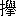

「あア／＼
斯うも警察のお手が
能く行届き、
何うしても逃れぬ事が出来ぬと
知たら、決して悪事は働かぬ所だッたのに」とは
或罪人が
己れの悪事露見して判事の前に
引据られし時の
懺悔の言葉なりとかや、
余は
此言葉を聞き此記録を書綴る心を起しぬ、此記録を読むものは
何人も悪事を働きては
間職に合わぬことを
覚り、
算盤珠に掛けても正直に暮すほど利益な事は無きを知らん、
殊に
今日は鉄道も有り電信も有る世界にて警察の力を
潜り
果せるとは
到底出来ざる所にして、
晩かれ早かれ露見して罰せらるゝは一つなり。
斯く云わば此記録の何たるやは
自ら明かならん、
個は罪人を探り之を追い之と闘い之に勝ち之に敗られなどしたる探偵の実話の一なり。
［＃改ページ］
余が医学を修めて
最早卒業せんとせし頃（時に余が年二十三）余は
巴里府プリンス街に下宿し
居たるが余が借れる
間の隣の
室に中肉中背にて
髭髯を
小綺麗に
剃附て容貌にも別に癖の無き一人の下宿人あり、
宿の者
等此人を
目科「
様」とて特に「
様」附にして呼び、帳番も廊下にて
摺違うたびに此人には帽子を脱ぎて
挨拶するなど
大に
持做ぶりの違う所あるにぞ、余は
何時とも無く不審を起し目科とは
抑も何者にやと疑いたり、
素より室と室、隣同士の事とて或は
燐寸を貸し或は
小刀を借るぐらいの
交際は有り、又時としては朝一緒に宿を
出で次の四辻にて分るゝまで語らいながら歩むなどの事も有りたれど其身分其職業などは探り知ろう
様も無く
唯だ此の目科に美しき細君ありて充分目科を愛し
且つ
恭う様子だけは知れり、
去れど目科は妻ある身に不似合なる不規則
千万の身持にて或時は朝
猶暗き内に家を
出るかと思えば或時は夜通し帰り
来らず又人の皆
寝鎮りたる
後に
至り細君を叩き起すことも有り
其上時々は一週間ほど帰り来らぬことも珍しからず、
斯も不規則なる
所夫に仕え細君が
能く苦情を
鳴さぬと思えば余は益々
訝しさに
堪えず、
終に帳番に
打向いて
打附に問いたる所、目科の名前が余の口より離れ切るや切らぬうち帳番は
怫然と色を
作し、
毎も宿り客の内幕を遠慮も無く話し
散すに
引代て、余計な事をお
問なさるなと厳しく余を
遣込めたれば余が不審は是よりして
却て、益々
募り、
果は作法をも打忘れて熱心に目科の
行いを見張るに至れり。
見張り
初めてより
幾程も無く余は目科の振舞に
最と怪しく
且恐ろしげなる事あるを見て
何うせ
碌な人には
非ずと思いたり、其事は
他ならず、或日目科は当時の流行を
穿ちたる
最立派なる服を
被かざり胸には「レジョン、ドノル」の勲章を
燦めかせて
外より帰ると見たるに
其僅か数日後に彼れは最下等の職人が
纏う
如き
穢らしき
仕事衣に破れたる帽子を
戴きて家を
出たり、其時の彼れが顔附は
何処とも無く悪人の
相を帯び一目見るさえ
怖らしき程なりき、是さえあるに或午後は又彼れが
出行かんとするとき其細君が
閾の
許まで送り出で、
余所目にも
羨まるゝほど
親げに彼れが首に手を巻きて別れのキスを移しながら「
貴方、大事をお
取なさい、
内には
私しが気遣うて待て居ますから」と叫びたり、大事を取れとは何事にや、
委細の心は分らねど
扨は、扨は、細君が彼れの身持を
咎めぬのみかは何も彼も承知の上で却て彼れに腹を合せ、彼れが如き異様なる振舞を
為さしむるにや、斯く思いて余は
殆ど震い上り世には恐ろしき夫婦もある
哉と
嘆じたれど、此後の事は是よりも
猶お
酷かりき。
余は修学に身を委ねながらも、夜に
入りては「レローイ」
珈琲館と云えるに行き
球や
歌牌の勝負を楽むが
捨難き
蕩楽なりしが、
一夜夫等の楽み終りて帰り来り、
猶お
球突の
戯れを想いながら眠りに
就しに、夢に球と球と相触れて
戞々と響く音に耳を襲われ、驚き
覚めて
頭を
れば其響は球の音にあらで外より余が室の戸を急がわしく打叩くにぞありける、時ならぬ真夜中に人の眠りを妨るは
何れの
没情漢ぞと
打呟きながら、
起行きて戸を開くに、
突て
入る
一人は是なん目科其人にして衣服の
着様は
紊れ、飾り
袗の胸板は引裂かれ、帽子は失い襟飾りは曲りたるなど一目に他人と組合い
攫み合いたるを知る有様なるに其うえ顔は一面に血
塗れなれば余は全く仰天し「や、や、貴方は
何う
成ッた」と叫び問う、目科は其声高しと叱り鎮めて「いや此傷は、なに
太した事でも有ますまいが何分にも痛むので幸い貴方が医学生だから手当を
仕て貰おうと思いまして」と答う、余は無言の
儘に彼れを
据らせ其傷を
検むるに
成るほど血の出る割には
太した怪我にもあらず、
爾れど左の頬を耳より口まで
引抓れたる者にして
処々に肉さえ
露出たれば痛みは
左こそと察せらる、
頓て余が其傷を洗いて
夫々の手術を施し終れば目科は厚く礼を述べ「いや是くらいの怪我で逃れたのは
未しもです。
併し此事は誰にも言わぬ様に願います」との注意を
遺して
退きたり、是より夜の明るまで余は眠るにも眠られず、様々の想像を浮べ来りて是か
彼れかと考え廻すに目科は
追剥か
盗坊か
但しは又強盗か、何しろ
極々の悪人には相違なし。
爾れど彼れ翌日は静かに余が室に
入来り再び礼を繰返したる末、意外にも余に晩餐の饗応せんと
言出たり、晩餐の饗応などとは彼れが柄に無き事と思い余は少し不気味ながらも
唯彼れが本性を
見現さんと思う一心にて其招きに応じ、気永く構えて耳と目の及ぶだけ気を附けたれど
露ほども余の疑いを晴す如き事柄は聞出しもせねば見出しもせずに晩餐を終りたり。
爾は云え是よりして余と目科の間柄は
一入近くなり、目科も何やら余に
交りを求めんとする如く幾度と無く余を招きて細君と共々に
間食を
為し
殊に又夜に
入りては
欠さず余を「レローイ」珈琲館まで
追来り共に勝負事を試みたり、
斯くて七月の
一夕、五時より六時の間なりしが例の如く珈琲館にて
戯れ
居たるに、衣類も
穢くるしく
怪しげなる男
一人、
遽しく
入来り何やらん目科の耳に
細語くと見る間に目科は顔色を変て身構し「
好し／＼
直に行く、早く帰ッて皆に
爾云え」と、命ずる間も
急わしげなり、男は此返事を
得るや又
一散に走去りしが、後に目科は余に向い「誠に残念ですが、勤めには代られぬ
譬です、此勝負は明日に譲り今日は是で失敬します」とて早や立去らん様子なり、勝負の中止も快からねど
夫よりも不審に
得堪えず、彼れが秘密を見現すは今なり、と余は思切ッて同行せざるの遺憾を
述るに「
爾さ、なに構うものか、来るなら一緒にお
出なさい、随分面白いかも知れませぬから」
斯く聞きて余は嬉しさに
心迫き、返す言葉の暇さえ惜しく、
其儘帽子を
戴きて彼れに従い珈琲館を
走出たり。
目科に従いて走りながらも余は
唯だ彼れが本性を知る時の来りしを喜ぶのみ、此些細なる一事が余の後々に
至大なる影響を及ぼす
可しとは思い寄ろう
筈も無し、目科は
宛も足を
渡世の
資本にせる人なる
乎と怪しまるゝほど達者に走り余は
辛うじて其後に続くのみにて
喘ぎ／＼ロデオン
街に達せし頃、一
輛の馬車を認め目科は
之れを
呼留めて
先ず余に乗らしめ
馭者には「出来るだけ早く
遣れ、バチグノールのレクルース
街三十九番館だ」と告げ其身も続て飛乗りつ
只管馬を
急し
立たり、「はゝア、行く先はバチグノールだと見えますな」とて余は最も謙遜の
詞を用い目科の返事を
釣出さんと試むれど彼れ今までとは別人の如く其唇固く閉じ其眉半ば
顰みたるまゝにて言葉を発せず其様深く心に思う所ありて余が言葉の通ぜぬに似たり、彼れ何を
斯く考うるや、
眼徒らに
空を眺めて動かざるは
六かしき問題ありて

を解かん
為め苦めるにや、
頓て彼れ
衣嚢を探り
最太やかなる
嗅煙草の箱を
取出し幾度か鼻に当て我を忘れて其香気を
愛る如くに見せ
掛る、
去れど余は
兼てより彼れに此癖あるを知れり、彼れ其実は全く嗅煙草を嫌えるも
唯だ
空の箱を
携え
居り、喜びにも悲みにも其心の動く
度我顔色を悟られまじとて煙草を
嚊ぐに
紛らせるなり、
兎角するうちに馬車は早やクリチーの坂を登り其外なる
大通を横に切りてレクルース
街に入り約束の番地より少し手前にて停りたり、停るも道理や三十九番館の前には
凡そ二三百の人集り巡査の制止をも聞かずして
推合える程なれば馬車は一歩だも進み得ぬなり、余は何事なるや知らざれど
茲にて目科と共に馬車を
降り群集を
推分て館の戸口に進まんとするに巡査の一人強く
余等を
遮りて
引退かしめんとす、目科は
威長高に巡査に向い「貴官は
拙者を
知ませんか、拙者は目科です、是なる若者は拙者と
一処に来たのです」目科の名を聞き巡査の剣幕は打って代り「いや
貴方でしたか、
爾とは思いも寄りませず」と
遽しく言訳するを聞捨て
閾を一足館内に歩み入れば驚きて
茲に
集える此家の
店子の中に立ち、口に泡を吹かぬばかりに手真似しながら
迫込て話しせる一老女あり定めし此家の店番なる
可し、目科は無遠慮に話の先を折り「
何所だ、何所です」と急ぎ問う「三階ですよ、三階の
取附です、
本統に
先ア此様な正直な家の中で、
夫に日頃あの正直な老人を」と老女が答え
来るを半分聞き
直様段梯子を四段ずつ一足に
飛上る、余は肺の臓の破るゝと思うほど
呼吸の
世話しきにも構わず其
学をして続いて上れば三階なる取附の右の室は入口の戸も開放せし
儘なるゆえ、之を潜りて客室、食堂、居室等を過ぎ
小広き
寝室へと
入込みぬ、見れば
茲には早や両人の紳士ありて共に小棚の横手に立てり、其一人の
外被に
青白赤三色の線ある
徽章を
佩たるは
問でも
著き警察官にして今一人は予審判事ならん、判事より少し離れたる所に、
卓子に向い何事をか
書認めつゝ有るは
確に判事の書記生なり、
是等の人々何が為に此室にきたりたるぞ、余は怪むひまも無く床の真中に血に塗れたる死骸あるに気附たり、小柄なる白髪の老人にして
仰向に
打倒れ、
傷所よりいでたる血潮は既に
凝りて黒くなれり。
余は驚きの余り
蹌踉きて
［＃「蹌踉きて」は底本では「蹌跟きて」］倒れんとし
纔に傍らなる柱につかまり我が身体を支え得たり、支え得しまゝ
暫しが程は
殆ど身動きさえも得せず、読者よ余は当時医学生たりしだけに死骸を見たるは幾度なるを知らず病院にも之を
見学校にも之を見たり、
然れども
面たり犯罪の跡を見たるは実に此時が初てなり。然り此老人の死骸こそは恐ろしき犯罪の結果なること言う迄も無し、
唯余の隣人目科は余ほどに驚き恐れず
足踏も確に警察官の
許に進むに、警察官は其顔を見るよりも「アア目科君か、折角
呼に
遣たけれど君を迎えるほどの事件では
無ッたよ目「とは又
何う云う訳で「いや君の智慧を借るまでも無く罪人が分ッて、仕舞ッた、実は
最う逮捕状を発したから今頃は
捕縛された時分だ」罪人が解りたらば
先ずほッと安心すべきところなるに目科は
爾は無くて痛く失望の色を現わし
を
体好く紛らさんため例の嚊煙草の箱を取出し鼻の先に二三度当て「おやおや罪人が分ッたのか」と云う、今度は予審判事が之に答えんとする如く「分ッたにも、
最う明白に分ッたよ、罪人は此老人が死切れた物と思い安心して逃て仕舞ッたが実は
是れが
本統に
天帝の見張て居ると云う者だろうよ、老人は
未だ
死切ずに居て、必死の思いで頭を上げ、傷口から出る血に指を浸して床へ罪人の名を書附て
置て
死だ。
先ア見たまえそれ血の文字が
歴々と残ッて居る」
此傷ましき語を聞きて余は直ちに
床中を見廻すに
成るほど死骸の頭の辺に恐ろしき血の文字あり
MONIS の綴りは
死際の苦痛に震いし如く揺れ／＼になりたれど
読擬う
可くもあらず、目科も之を見しかども彼れ驚きしか驚かざるか嚊煙草を振るのみにて顔色には現わさず
唯だ単に「
夫で」と云う、今度は又警察署長「
夫で分ッて居るじゃ無いか
藻西太郎と云う者の名前の初めを
書掛て事切れと
成たのだ、藻西太郎とは此老人の唯一人の甥だ、老人が余ほど
寵愛して居たと云う事だ」と説明す、目科は唯口の
中にて何事をか呟くのみ、
更に予審判事は今言いし警察官の説明を補わんとする如くに「此文字が何よりの証拠だから
何の様な悪人でも
剛情は張り得まい、
殊に此老人を殺して
夫が為に得の行くのは唯此藻西太郎
一人だ、老人は
巨多の財産を持て居て、
死さえすれば甥の藻西へ転がり込む様に
成て居る、のみならず老人の殺されたのは昨夜の事で、昨夜老人の
許へ来たのは
唯だ藻西一人さ、帳番の証言だから
是も確かだ、藻西は宵の九時頃に来て十二時頃まで居た
相だ、其後では誰も老人の室へ
這入た者が無いと云うから是ほど確な証拠は有るまい」目科は無言にて聞き終り意味有りげなる言葉にて「なるほど明かだ、日を見るよりも明かに藻西太郎と云う奴は大馬鹿だ、此老人が殺されさえすれば第一に自分は疑われる身だから、其疑いを避る様に、
切て
盗坊の
所為にでも見せ掛け何か品物を盗んで置くとか此室を
取散して置くとか
夫くらいの事は
仕そうな
者だ、老人を殺しながら
夫をせぬとは余り馬鹿過ると云う
者だ警察官「
爾さ別に此室を
取散すとか云う様な疑いを避ける工夫は仕て
無ッた、殺すと早々逃たのだろう、余り智慧の
逞しい男では無いと見える、
此向なら捕縛すれば
直に白状するだろう」と云い、
猶おも目科を小窓の所に誘い行きて小声にて何か話しを初め、判事は又書記に向い
是も何やらん差図を与え初めたり。
是にて
先ず目科の身の上に関する不審だけは全く晴れたり、彼れは
盗坊にも
非ず追剥にも非ず純然たる
探偵吏なり、探偵吏なればこそ其身持不規則なりしなれ、
身姿時々変ぜしなれ、
痛く細君に気遣われしなれ、「
様」
附にも呼ばれしなれ、顔に傷をも受けしなれ、今は少しの不審も無し彼れが事は露ほども余が心に関せず、之に引代て
唯痛く余の心に留り初めしは床の上の死骸なり、余が心は全く彼の死骸に
縛附［＃ルビの「しばりつけ」は底本では「しぱりつけ」］られたるに似たり、今まで目科を怪みたるよりも
猶お切に彼の死骸を思う、初て
死体を見し時の驚きと恐れとは
何時しか消えて次第に物の理を考うる力も
己に
復りしかば余は
唯だ
四辺に在る
総ての物に熱心に注意を配り熱心に考え初めぬ、身は戸の口に
立し
儘なるも
眼は
室中を
馳廻れり、今まで絵入の雑誌などにて
人殺の場所を写したる図などは見し事あり
孰れにも
其辺最と
取散したる景色見えしに、実際なる此人殺しの
寝室の内には取散したる跡を見ず老人の日頃不自由なく暮し
而も質素を
旨として万事に注意の
普き事は
是だけにて察せらる、寝床及び窓掛を初め在ゆる品物に手入
能く行届き
塵も無ければ汚れも見えず、此老人の殺されしは必ず警察官及び判事等の推量せし通り昨夜の事なりしならん、其証拠とも云う
可きは寝床の用意既に整い、寝巻及び肌着ともに寝台の
傍に
出しあり
猶お
枕頭なる
小卓の上には
寝際に
飲ん為なるべく、砂糖水を
盛たる
硝盃［＃ルビの「こっぷ」は底本では「こっぶ」］も
其儘にして又其横手には昨日の毎夕新聞一枚と
外に
寸燐の箱一個あり、小棚の隅に置きたる燭台は其蝋燭既に
燃尽せしかど定めし此犯罪を照したるものならん、曲者は蝋燭を吹消さずに逃去りしと見え燭台の
頂辺に
氷柱の如く垂れたる
燭涙は黒き汚れの色を帯ぶ、
個は蝋燭の自から燃尽すまで
燃居たるしるしなり。
総て
是等の
細き事柄は
殆ど一目にて余の
眼に映じ
尽せり、今思うに此時の余の眼は
宛も写真の
目鏡の如くなりし
歟、眼より直ちに
種板とも云う
可き余の心に写りたる所は
最と
分明なるのみかは
爾後幾年を経たる
今日まで少しも消えず、余は今も
猶お其時の如く
覚え
居れば少しの相違も無く
其室を描き得ん、予審判事の書記が寄れる
卓子の足の下に転がりて
酒瓶の栓の
在りし事をも記臆し、
其栓はコロップにて其一端に青き
封蝋の
存したる事すらも忘れず、
此後千年
生延るとも是等の事を忘る可くも
非ず、余は真に此時まで
斯く仔細に
看て仔細に心に留る事の出来ようとは
自ら思いも寄らざりき、不意の事柄にて不意に此時現れたる能力なれば我が心の
如何を
詳く
思見る
暇も無かりき。
我れと我が心に分らぬほど余は老人の死骸に
近き
度き望みを起し自ら制せんとして制し得ず、我心よりも
猶強き一種の望みに
推され推されて余は警官及び判事を初め書記や目科の此
室に在るをも忘れし程なり、彼等も別に余が事には心を留めざりしならん、判事は書記に差図を与え目科は警官と
密々語らう最中なりしかば、余は
咎められもせず又咎めらる可しと思いもせず、
最平気に、
最安心して、
宛も言附られし役目を行うが如くに泰然自若として老人の死骸の
許に行き、
其傍に
跪ずきてそろ／＼と死骸を検査し初めぬ。
此老人歳は七十歳より七十五歳までなる可し、背低くして肉
瘠せたれど健康は充分にして随分百歳までも生延得る容体とし
頭髪も
猶お白茶けたる黄色の艶を帯びて美しく、頬には一週間も
剃刀を当ぬかと思うばかりに
贅毛の延たれど
個は死人に
能く有る例しにて死したる
後急に延たるものなる可く余は
開剖室などにて同じ
類を実見せしこと
度々なれば別に
怪とも思わず
唯だ余が
大に怪しと思いたるは老人の顔の様子なり、老人の顔附は
最と
穏かにして
笑を浮めしとも云う
可く
殊に唇などは今しも友達に向いて親密なる話を
初んとするなるかと疑わる、読者記臆せよ、老人の顔には笑こそあれ
苦みの様子は少しも存せざることを、
是れ
唯だ
一突に、痛みをも苦みをも感ぜぬ
中に死し去りたる証拠ならずや、余は実に
爾う思いたり、此老人は
突れてより顔を
蹙むる間も無きうちに
事切と
為りしなりと、
若し真に顔を蹙むる間も無かりしとせば
如何にして
MONIS の五文字を
其床に
書記せしぞ、
死るほどの傷を負い、其痛みを
堪えて我
生血に指を染め其上にて字を書くとは一通りの事に
非ず、充分に顔を蹙め充分に
相を
頽さん、
夫のみか名を書くからには、死せし後にも此悪人を捕われさせ我が
仇を
復さんとの念あること
必定なれば顔に恐ろしき怨みの相こそ現わるれ笑の浮ぼう
筈万々無く親友に話を初んとするが如き穏和の色の残ろう筈万々なし、今にも我が敵に
噛附んずる程の怒れる
面色を存すべき筈ならずや。
殊に老人の
傷処を
検め見れば
咽を一突にて深く刺れ「
苦」とも云わずに死せしとこそ思わるれ、
曲者の去りたる後まで
生存えしとは
認む可からず、笑の浮みしは実際にして又道理なり、血の文字を書きしとは、如何に考うるとも受取られず、あゝ余は
唯是だけの事に気附てより、後にも先にも
覚なき程に
打驚き胸のうち
俄に騒ぎ
出して、轟く
動悸に身も裂くるかと疑わる。
去れば余は
猶お老人の
傍を去る
能わず、更に
死体の手を取りて
検むるに、余の驚きは更に強きを加え
来れり、読者よ、老人の右の手には少しも血の
痕を見ず
唯だ左の手の人差指のみ
紅く血に
塗れしを見る、此老人は左の手にて血の文字を書きたりと云う
可きか、
否、否、否、左りの手にて
書う筈なし余は
最早や我が心を
抑る
能わず、我が言葉をも吐く
能わず、身体に
満々たる驚きに、余は其外の事を思う能わず、
宛も物に襲われし人の如く一
声高く叫びし
儘、
跳上りて
突立たり。
余の驚き叫びし声には室中の人皆驚きしと見え、余が自ら我が声を怪みて身辺を見廻りし頃には判事も警察官も目科も書記も皆余の
周囲に立ち「何だ「何事だ「
何うした「
何うしました」と
遽だしく
詰問う声、矢の如く余が耳を突く、余は
猶お一語をも発し得ず
唯だ「あ、あ、あれ、あれ」と
吃りつゝ
件の
死体に指さすのみ、目科は幾分か余の意を
暁りしにや
直様死体に
重り掛り其両手を検め見て、
猶予もせずに立上り「
成ほど、血の文字は此老人が書いたので無い」と言い怪む判事警察官が猶お
一言も発せぬうち又
蹐みて
死体の手を取り其左のみ汚れしを
挙げ示すに、警官も此証拠は争われず「あゝ大変な事を見落して
居たなア」と
呟けり、目科は例の
空煙草を急ぎて其鼻に
宛ながら「
好く
有る奴さ一番大切な証拠を一番後まで見落すとは、
併し老人が自分で
書たので無いとすれば事の具合が全く一変する、さア此文字は誰が書た、勿論老人を殺した奴が書たのだろう」判事と警官も一声に「
爾とも爾とも目「
愈々爾とすれば
曲者が老人を殺した後で自分の名を書附けると云う馬鹿はせぬなら、此曲者は無論藻西で無いと思わねばならぬ、
是丈は誰も異存の無い所だから、此
断案は両君何と下さるゝか」警官は
茲に至りて言葉無し、判事は深く考えながら「爾さ、曲者が自分の名を書ぬ事は明かだ、
書のは
則ち自分へ疑いの掛らぬ為だから、爾だ
他人に疑いを掛けて自分が
夫を逃れる為めだから、此名前で無い者が曲者だ、
吾々は曲者の計略に載られて居たのだ、藻西太郎に罪は無い、爾とすれば
本統の罪人は誰だろう警「爾さ誰だろう目「夫を見出すは判「目科君、君の役目だ」
斯く一同の意見が全く一変せし所へ、
宛も外より
入来る一巡査は藻西太郎を捕縛に行きたる
一人なる可し「唯今帰りました」の声を先に立てゝ第一に警察官の前に行き「命令通り夫々手を尽しましたが是ほど
旨く
行た事は有ません警「では藻西を捕縛したか、
夫は大変だが巡「はい手も無く捕縛して仕舞いました夫に彼れ全く逃れぬ所を見てか
不残白状して仕舞いました警「や、や藻西が白状したとな」
罪なき人が白状する
筈なければ藻西太郎が白状せしと云うを聞き一同は言葉も出ぬまでに驚き果て、中にも余の如きは
只だ夢かと思うばかりなりき、今まで余の集め得たる証拠は
総て
彼れの
外に
真の罪人あることを示せるに彼れ自ら白状したりとは何事ぞ、
斯る事の有り得べきや、人々の
中にて一番早く心を
推鎮めしは目科なり彼れ五六遍も嚊煙草の空箱を鼻に
宛たる
末、
件の巡査に打向いて荒々しく「
夫は全く間違いだ、お前が自分で欺されたのか
爾無くば吾々を欺して居るのだ必ず其
二に
一だ巡「
其様な事は有ません
夫は私しが誓います目「いや誓うには及ばぬ
無言て居なさい、何でも藻西太郎の言た事をお前が聞違て白状だと思たのか、
夫ともお前が手柄顔に何も彼も分ッた様に言い吾々を驚かせようと思ッたのだ」此厳しき言葉を聞くまで
最と謙遜に構えたる巡査なれど今は我慢が出来ずと思いし如く横柄に肩を
聳動し「へえ御免を
蒙りましょう、
憚りながら私しは其様な馬鹿でも無ければ嘘つきでも
有ません自分の言う事くらいは心得て
居ますから」と
遣返す、此儘に捨置なば二人の間に
攫み合も初り
兼ざる剣幕なれば警察長は捨置かれずと思いし如く割て入り「いや目科君待ち給え詳しく聞終ッた上で無ければ分らぬから」と云い更に巡査に打向いて「さ事の次第を細かに述べ今一応
説明して見ろ」と命じたり、巡査は此命を得て
俄に己の重きを増したる如く
一寸と目科を尻目に掛け
容体ぶりて説き始む「私しは貴官の命を受け検査官一名及び同僚巡査一名と共に、都合三名で、ビヽエン街五十七番館に住む飾物模造職藻西太郎と云う者をば、バチグノールの此家に住で居る
伯父を殺したと云う嫌疑で捕縛の為め出張致しました」警察長は、成る
可く彼れの言葉を
切縮させんと思う如く、
将た感心する如くに「其通り、其通り」と軽く
頷首く、巡査は益々力を得て「吾々三人馬車に乗り
頓て其ビヽエン街に達しますと藻西太郎は丁度夕飯を初める所で妻と共に店の次の間で席に
就うと
仕て居ました、妻と云うのは年頃二十五歳より三十歳までの女で実に驚く可き美人です、吾々三人引続て其家に入込ますと藻西太郎は
斯と見て
直様何の用事だと問いました、問うと検査官は
衣嚢より逮捕状を取出し法律の名を以て其方を捕縛に参たと答えました」此長々しき報告を目科は聞くに得堪ずと思いし如く「お前は要点だけ話す事が出来ぬのか」と
迫し立るに巡査は一向頓着せず、「私は今まで随分捕縛には出張しましたが、捕縛と聞て此藻西太郎ほど
喫驚したのは見た事が有りません、彼れは
漸く我れに復りて其様な筈は有ません必ず誰かの間違いでしょうと言ました、検査官が
推返して決して人違いで無いと答えますと
夫では何の
廉で捕縛しますと問返しました、オイ何の廉などゝ其様な
児供欺しを
云ても
駄目だよ其方の
伯父は
何うした、既に死骸が其筋の目に留り其方が殺したと云う沢山の証拠が有る其方に於いて覚え有う、と詰寄る検査官の言葉を聞て驚いたの驚か無いのと云て
全で度胸を失ッて仕舞ました、何か
言うとするけれど其言葉は口から出ず
蹌踉いて椅子に倒れると云う騒ぎです、検査官は彼れの首筋を捕えて柔かに引起し今更彼是れ云うても無益だ
有体に白状しろ白状するに越した事は無いと
諭しました、彼れは早や魂も抜けた様に成り馬鹿が人の顔を見る様に検査官の顔を見上てハイ何も彼も白状致します全く私しの
仕た
業ですと答えました」警察長は聞来りて「
能く
遣た、能く遣た」と再び賛成の意を示すに巡査は全く勝誇りて「私し共は
素より出来るだけ早く事を終る所存です、成る可く人を騒がすなと云うお差図を得て居ましたが
何時の間にか早や弥次馬ががや／＼と其戸口に集りましたから検査官は罪人の手を引立てさゝ警察署で待て居るから直に行こうと云いますと罪人はやッと立上り
有だけの勇気を絞り集めた声でハイ参りましょうと答えました吾々は是で
最う何も彼も
旨く行たと思て居ましたが実は彼れの
背後に女房の控えている事を忘れて居ました、此時まで藻西太郎の女房は気絶でも仕たかと思わるゝほど静で、腕椅子に沈込んだまゝ一言も発せずに居ましたが吾々が藻西を引立ようとすると
宛で女獅々の狂う様に飛立て戸の前に立塞がり、通しません
茲を通しませんと叫びましたが
本統に凄い様でした、
流石に検査官は慣て居るだけ静に制してイヤ
内儀腹も立うが仕方が無い其様な事をするだけ
不為だからと云ましたけれど女房は仲々聴きません
果は両の手に左右の戸を捕え
所天に決して其様な罪は無い彼に限ッて悪事は働かぬとか所天が牢へ入られるなら私しも入れて下さいとか夫は／＼最う聞くも気の毒なほど立腹し吾々を罵るやら
誹るやら、容易には収り
相も見えませんでしたが、何と云ても検査官の承知せぬのを見、今度は泣ながら詫をして
何うか所天を許して呉れと願いました、気の毒は気の毒でも役目には代られませんから検査官は少しも動きません、女も
終には思い
切たと見え所天の首に手を巻て貴方は此様な恐ろしい疑いを受けて
無言て居るのですか覚えが
無と言切てお仕舞いなさい貴方に限て其様な事の無いのは私しが知て居ますと泣きつ
口説つする
様に一同涙を
催しました、
夫だのに藻西太郎と云う奴は本統に
酷い奴ですよ、
何うでしょう其泣て居る我が女房を
邪慳にも
突飛しました、本統に自分の
敵とでも云う様に荒々しく突飛しました、女房は次の
室まで
蹌踉て行て
仆れましたが
夫でも
先ア幸いな事には夫でいさくさも収りました、何でも女房は仆れた
儘気絶した様子でしたが其暇に検査官は亭主を引立て
直様戸表に待せある馬車へと
舁いで行きました、いえ本統に藻西を舁いだのです彼れは足がよろ／＼して馬車まで歩む事も出来ぬのです、え何と恐ろしい者じゃ有ませんか、我が悪事が早や露見したかと失望したので足が立なく成たのです、
先々是で厄介を払たと思た所ろ女房の外に
猶だ一つ厄介者が有たのですよ、夫を何だと思います、彼れの
飼て居る黒い犬です、犬の畜生女房より猶だ手に合ぬ奴で、吾々が藻西太郎を引立ようとすると
 々
々と吠て吾々に
食い
附うとするのみか追ても追ても仲々聴ません、実に気の強い犬ですよ、夫でも
先ア味方は三人でしょう敵は
纔に一匹の犬だから
漸くに
追退て藻西を馬車へ引載ると今度は犬も調子を変え、一緒に馬車へ乗うとするのです、夫も到頭
追払いやッとの事で引上る運びに達しましたが、其引上る道々も検査官は藻西太郎を慰めようとしますけれど彼れ
首を垂れて深く考え込む様子で一言も返事しません、夫から警察本署へ着た頃は少し心も落着た様子でしたが、
頓て牢の中へ
入ますと、彼れ唯一人淋しい一室へ閉籠られただけ又首を垂れあゝ
何うしたんだなア本統にと繰返し／＼呟きます検査官は之を聞て再び彼れの傍に近附て何うしたか自分で知って居るだろう、愈々罪に服するかと問ますと彼れは
爾ですと云わぬばかりに
頷首きながら何うか独りで置て下さいと云うのです、夫でも
若しや独りで置いて自殺でも企てる様な事が有ては成らぬと思い吾々は
竊に見張を
就て牢から退き、検査官と同僚巡査一人とは本署に残り私しが此通り顛末の報告に参りました」と世に珍しき長談議も
茲に
漸く終りを告げたり。
聞終りて警察長は「是で最う何も彼も明々白々だ」と呟き予審判事も同じ思いと見え「
左様、明々白々です、外に
何の様な事情が
有うとも藻西太郎が此事件の罪人と云う事は争われぬ」と云う、余は実に驚きたれど
猶お合点の行かぬ所あり横鎗を入んため
将に
唇頭を動さんとするに目科も余と同じ想いの如く余よりも先に口を開き「
是を明々白々とすれば藻西は伯父を殺した後で自分の名を書附て行た者と思わねばならぬ、其様な事は何うも無い
筈だが、警「無さ
相でも
好いじゃ無いか当人が白状したと云えば夫から上確な事は無い、成るほど血の文字が少し合点が行かぬけれど是も当人に
篤と問えば必ず其訳が分るだろう、唯吾々が充分の事情を知らぬから
未だ合点が行かぬと云う丈の事」判事は目科の横鎗にて再び幾分の
危む念を浮べし如く「今夜
早速牢屋へ行き
篤と藻西太郎に
問糺して見よう」と云う。
是にて判事は
猶お警察長に向い先刻死骸検査の
為め
迎に
遣りたる医官等も
最早や
来るに間も有るまじければ
夫まで
茲に
留られよと頼み置き其身は書記及び報告に来し
件の巡査と共に此家より引上げたり、後に警察長は予審判事の頼みに従いて
踏留りは留りしかど最早夕飯の時刻なれば、成る可く引上げを早くせんと思いし如くそろ／＼
室中の
抽斗及び押入等に封印を施し初めぬ。
余と目科両人は同じ疑いに心迷い顔見合せて立つのみなりしが、目科は
徐々と其疑いの鎮まりし如く「
爾さなア、矢張り血の文字は老人が書たのかも知れぬ」余は
忽ち目を見開き「老人が左の手でかね、其様な事が有うか
夫に老人が
唯一突で文字などを書く間も無く
死だ事は僕が受合う」あゝ余と目科との間柄は早や
君僕と云う程の隔て無き
交りと
為れり目「全く相違ないのかね余「傷から云えば全く
爾だよ、今に検査の医者も来るだろうから問うて見たまえ、
尤も僕は
猶お卒業もせぬ書生の事だから
当には成らぬかも知れぬが医官に聞けば必ず分る」目科は又も空箱を取出しながら「此事件には
猶だ吾々の知らぬ秘密の点が有るに
極ッて居る、其点を検めるが肝腎だ
夫を検めるには是から更に詮策を初めねばならぬが、
爾だ更に初めても構いはせぬなア面白い初めようじゃ無いか
好し／＼
其積で
先ず第一に此家の店番を呼び
問正して見よう」
斯云いて目科は
梯子段の
際に行き、
手欄より
下階を
窺きて声を張上げ店番を呼立たり。
店番の来るまでにて目科は更に犯罪の現場の検査を初め、中にも
此室の入口の戸に最も深く心を留めたり、戸の錠前は無傷にして少しも外より無理に推開きたる如き
痕無ければ
是だけにて
曲者が
兎にも
角にも老人と
懇意の人なりしことは
確なり、余は又目科が
斯く詮
鑿する間に室中を
其方此方と見廻して先に判事の書記が寄りたる
卓子の下にて見し彼のコロップの栓を拾い上げたり、
要も無き
唯一個の空瓶の口なれば是が
爾までの手掛りに
為ろうとは思わねど少しの手掛りをも見落さじとの熱心より之も念の為にとて拾い上げしなれ、拾い上げて
検め見るに是れ通常の酒瓶の栓にして別に
異りし所も無し、上の端には青き封蝋の着きし儘にて其真中に
錐をもみ込し如き穴あるは是れ
螺旋形のコロップ
抜にて
引抜たる
痕なるべし、
尤も
護謨同様に
紳縮みする
樹皮なれば其穴は
自ら
塞がりて
唯だ其傷だけ残れるを見るのみなれば更に
覆えして
下の端を眺れば
茲には異様なる
切創あり、何者が何の為にコロップの栓の裏に
斯る切創を附けたるにや、其創は
最鋭き刃物にて刺したる者にて老人の
咽を刺せし
兇刃も
斯る
業物なりしならん、老人の咽を突きしも此コロップを突し如くに突しにや、
斯く思いて余はゾッと身震いしつ、
其儘持行きて目科に示すに彼れ
右見左見打眺めたるすえ「コレハ大変な手掛だ」と云い嚊煙草の空箱を取出す間も無く喜びの色を浮べたれば、余は
何故是が大変の手掛りなるやと怪みて打問うに彼れ今も
猶お押入其他の封印に忙わしき彼の警察長を尻目に見、彼れに何事も聞えぬ様小声にて
説明す「何故だッて君、此コロップは曲者が捨て行たのでは無いか、
先ず此傷を見給え此傷を、是は確に老人を刺した刃物で附けたのだ」余も同じく小声にて「何の為に目「何の為に、其様な事を聞く奴が有るものか、曲者は余程鋭い
両刃の短剣を持て来たのだ、両刃と云う事は此傷の形で分る、傷の中程が少し厚くて両の
縁が次第に細く薄く
成て居るじゃ
無いか余「成るほど
爾だ目「
爾すれば
此鋭利い短剣を曲者は
何うして持て来たゞろう、人に見られぬ様に隠して居たのは明かだ、さア隠すなら
何所へ隠す、着物の
衣嚢とか其他先ず自分の身の
中には違い無いが其
鋭利いものを身の中へ隠すのは極めて
険呑だ、少し間違えば自分の身に怪我をするか或は又
剣先の刃を欠くと云う
恐が有る、して見れば何かで其剣先を包んで置かねばならぬ、さア何で包んだ、即ち此コロップだろう、コロップは
柔かで少しも刃を傷める
患いが無いから
夫で之をそッと其剣先へ刺込で
衣嚢へ入れて来たのだ余「説き得て妙目「老人を突く時に此コロップを外したが後では
最う誰にも認られぬうち早く立去ろうと思うからコロップなどは打忘れて帰たゞろう余「成るほど目「
所で比コロップには青い封蝋が附いて居るから何か一種の銘酒の瓶に用いて有ッたに違い無い、
斯く段々推して行けば次第に捜すのも易くなる、何にしろ此コロップは大変な手掛だ、是が手に入る以上は僕必ず曲者を捕えて見せる」と
云終りて其コロップを
衣嚢に
入るに此所へ入来るは別人ならず今しも目科が呼置きたる此家の店番にして即ち先刻余と目科と此家に入込しとき店先にて大勢の
店子等に泡を吹きつゝ話し居たる老女なり、女「何御用か知ませんが少々用事も有ますので余りお手間の取れぬ様に願います」と云いつゝ老女は目科の差出す椅子に寄れり、目科は
何所と無く威光高き調子を現わし「少し
聞度い事が有るので、是から一々お前に問うから何も彼も腹臓なく答えぬと返てお前の
不為だよ女「はい心得ました」目科は判事の尋問する如く己れも先ず椅子に寄りて「殺された老人の名は何と云う、女「
梅五郎と
申ました目「
何時から
此家に住で居る女「はい八年前から目「其前は
何所に住だ女「
夫まではリセリウ
街で理髪店を開いて居ました、老人は理髪師で
身代を作ッたのです目「
何れほどの身代が有る女「
確には知ませんが老人の甥が時々申ますに伯父は命を取られると云う場合には随分百万
法くらいは出し兼ぬと云いました」目科は心の中にて「ふゝむ予審判事は何かの書面を
頻りと書記に写させて居たから梅五郎の身代を残らず調べ上て行たと見えるな」と
打呟き更に又老女に向い「して梅五郎老人は
平生何の様な人だッた女「
極々の善人でした、
尤も少し
我儘で剛情な所は有ましたが高ぶりは致しません、少し機嫌の
能い時は面白い事ばかり言て人を笑せました、
爾でしょうよ流行社会の理髪師で
巴里中の美人は一人残らず
彼の人の手に掛ッて髪をくねらせて貰ッたと云う程ですもの目「暮し向は女「
先ア当前ですねえ、自分で
儲溜めた金で暮す人には丁度相当と思われる暮し方でした、
夫かとて無駄使などは決して致しませんでしたが目「夫だけでは
確と分らぬ何か是と云う格別な所が有そうな者だ女「有ますとも老人の室の掃除
向と給仕とは
私しが引受けて居ましたもの、大層
甲斐々々しい老人で室の掃除などは
大概一
人で仕て仕舞い私には手を掛させぬ程でした、何がなし暇さえあれば
掃たり
拭たり
磨たり仕て居るが癖ですから目「給仕の方は女「給仕の方は毎日昼の十二時を合図に私しがお膳を持て来るのです、夫が老人の朝飯です、朝飯が済でから身仕度するが
凡そ二時まで掛ります、大層着物を
被るのが
八かましい人で
毎でも婚礼の時かと思うほど
身綺麗にして居ました、身仕度が終ると家を出て
宵の六時まで散歩し六時に外で
中食を済せ、夫から多くはゲルボアの珈琲館に入り昔友達と珈琲を
呑だり
歌牌を仕たりして遅くも夜の十一時には帰て来て
寝床に就きました、ですが
唯た一つ悪い事にはあの年に
成て
猶だ女の後を追掛る癖が止みませんから私しは時々年に恥ても少しは
謹むが
好ろうと云いました、ですが誰でも落度は有る
者で
夫に若い頃の商売が商売で女には
彼是れ云れた方ですから言えば無理も有りますまいが」と云い少し笑いを催し
来れど目科は極めて真面目にて「して梅五郎の
許へは
沢山尋ねて来る人が有たのか女「はい有ッても
極極僅かです其うちで
屡々来るのが甥の藻西太郎さんで、土曜日の度には必ず老人に呼ばれてラシウル料理店へ中食に行きました目「甥と老人との間柄は女「此上も無く好い仲でした目「是までに言争いでも仕た事は女「決して有りません、尤もお
倉さんの事に就ては両方の言う事が折合ませんですけれど目「お倉さんとは誰の事だ女「藻西太郎さんの
細君です、実に奇麗な女ですよ。あの様なのが
先ア立派な女と云うのでしょう、
夫に外に悪い癖は有りませんけれど其お倉さんも大変な
衣服蕩楽で藻西太郎さんの身代に釣あわぬほど立派な
身姿をして居ますから
綺倆が一層引立ちます、ですから全体云えば老人が大層誉め無ければ成らぬ筈ですのに
何う云う者か老人は其お倉さんが大嫌いで藻西太郎さんに向ッては手前は女房を愛し過る今に見ろ女房の鼻の先で追使われる様になるからとか、お倉は手前の様な亭主に満足する女じゃ無い、今に見ろ何か間違いを
仕出来すからとか其様な事ばかり言て居ました、
爾々夫ばかりでは有りませんよ昨年も老人とお倉さんと喧嘩をした事が有ます、お倉さんは
亭主に
或る
飾屋の株を買せるからと云い老人に大変な無心を言て来たのです、すると老人は一も二も無く
跳附て、
己が死んだ後では己の金を藻西太郎が
何の様に仕ようと勝手だけれど
兎角も己の稼ぎ溜た金だから生て居る間は己の勝手にせねば成らぬ、一文でも人に貸して使わせる事は出来ぬなんぞと言ました」読者よ余の考えにては此点こそ最も大切の所なれば目科が充分に問詰るならんと思いしに彼れ意外にも
達て問返さん様子なく余が
目配するも知らぬ顔にて更に次の問題に移り「したが老人の殺されて居る所は
何うして見出した女「何うしてとは、夫は私しが見出したのですよ、
先あ何うでしょうお聞下さい私しは
毎もの通り十二時を合図に膳を持て老人の室まで来、
兼て入口の合鍵を渡されて居る者ですから何気なく戸を開て、内へ
這入て見ますると、可哀相に、此有様です」と
言来りて老女は真実
憫れに堪えぬ如く声を
啜りて泣出せしかば目科は之を慰めて「いやお前が
爾まで悲むは尤もだが、
最う時が無い事で有るし先ず悲みを
堪えて――女「はい堪えます、堪えます目「
私の問う事に返事を仕て、さゝ、夫から何うした、其老人の死骸を見て其時お前は何と思ッた女「何と思わ無くとも分ッて居ます、甥の畜生が伯父の
死るのを待兼て早く其身代を自分の物にする気になり殺したに極て居ます、私しは皆に
爾云て
遣ました目「
併し、何故其甥が殺したに極て居る人を人殺しなどゝ云うは実に容易の事で無く其人を首切台へ
推上すも同じ事だ、少し位は疑ッても容易に口にまで出して言触す事の出来る者で無い、夫くらいの事はお前も知て居るだろう女「だッて
貴方、甥で無くて誰が殺しましょう、藻西太郎は昨夜老人に
逢に来て、帰て行たのは
大方夜の十二時でした、
毎も来れば這入がけと
帰掛とに大抵私しへ声を掛る人ですのに昨夜に限り来た時にも帰る時にも私しへ一言の挨拶をせぬから私しは変だと思て居ましたよ、何しろ昨夜其甥が帰てから今朝私しが死骸を見出した時まで誰も老人の室へ這入ッた者の無いのは確かです夫は私しが受合います」
読者よ是だけの証言を聞き余は驚かざる
可き
乎、余は実に仰天したり、余は此時猶お年も若く経験とても積ざれば、最早や藻西太郎の犯罪は警察官の云し如く真に明々白々にて此上問うだけ無益なりと思いたり去れど目科は
流石経験に富るだけ、
且つは彼れ如何に口重き証人にも其腹の
中に在るだけを充分
吐尽させる秘術を知れば
猶お失望の様子も無く
宛も
独言を云う如き調子にて「
成る程昨夜藻西太郎が老人に
逢に来た事は
最う確だな女「確かですとも、是ほど確かな事は有ません目「するとお前は藻西を見たのだね、其顔を
確り
認たのだね女「いえ少しお待なさい、見たと云て顔を見た訳では有ません廊下へ行く所を見たのです、夫も彼れ急いで歩きましたから、何でも私に
目認められまいと思う様に
本統に憎いじゃ有ませんか廊下の
燈明が充分で無いのを幸いちょい／＼と早足に
通過ました」余は此一
節を聞きて思わず椅子より飛離れたり、是れ実に軽々しく聞過し難き所ならん、余は殆ど堪え兼て
傍より問を発し「
若し夫だけの事ならばお前が確に藻西太郎と認めたとは云われぬじゃ無いか」老女は
最怪げに余を頭の
頂辺より足の先まで
隈なく見終り「なに貴方、
仮令当人の顔は見ずとも連て居る犬を確に見ましたもの、犬は藻西に連られて来る
度に私しが可愛がッて
遣りますから昨夜も私しの室へ来たのです、だから私しが
余物を
遣うとして居ると
丁度其時藻西が階段の所から口笛で呼ましたから犬は
泡食て三階へ
馳上ッて仕舞ました」此返事を目科は何と聞きたるにや余は彼れの顔色を読まんとするに、彼れ例の空箱にて之を
避け「して藻西の犬とは
何の様な犬だ」と老女に問う女「はい
前額に少し白い毛が有るばかりで其外は真黒な
番犬ですよ、名前はプラトと云ましてね、大層気むずかしい犬なんです、知ぬ人には誰にでも

りますが
唯私しには時々食う者を貰う為め少しばかり
穏かです、藻西太郎より外の者の云う事は決して聴きません」
是だけ聞きて目科は「夫で好し
最う聞く事は無いからお前下るが好い」と云い老女が外の戸まで立去るを
看送り
済し更に余が
方に打向いて「
最う
何うしても藻西太郎の
仕業と認める外は無い」と
嘆息せり。
目科が猶お老女を尋問し居たるうちに、先刻判事が向いに
遣しと云いたる医官二名出張し来りて此時までも
共々に手を取りて老人の死骸を
検め居たれば余は一方に気の揉める
中にも又一方に医官が検査の結果
如何と
殆ど心配の思いに堪えず、
凡そ医師
二人以上立会うときは十の場合が
七八まで銘々見込を異にする者なれば
若し此場合に於ても二人其見る所同じからず、
縦し一方が余の見立通り老人は唯一突にて
痛を感ずる間も無きうちに事切れたりと見定むるとも其一方が然らずと云わば何とせん、
青書生の余が言葉は
斯る医官の証言に向いては少しの重みも有る可きに非ず、
斯思いて余は二人の医官を見較ぶるに一方は
瘠せて背高く一方は
肥て背低し
斯も似寄たる所少き二人の医官が同様の見立を為すは殆ど望み
難き所なれば猶お彼等の言葉を聞かぬうちより
既に失望し居たる所、彼等は
頓て検査し終り、今まで居残れる警察長に向い不思議にも同一の報告を
為したり、同一の報告とは他ならず梅五郎老人は唯一突にて即死せし者なれば従ッて血の文字は老人の書し者に非ずと云うに在り。
余は意外にも二人の医官が二人ながら余の意見と同一の報告を為せしを見、ほッと息して目科に向えば目科は益々怪しみて決し兼たる如く「フム老人が書たで無いとすれば誰が書たのだろう、藻西太郎か、藻西太郎が自分で自分の名を書附て行くと云う事は決して無い、無い／＼何うしても無い、自分で自分の名を書くとは余り馬鹿げ過て居る」
余は此言葉に何の批評をも加えねど、己が役目の
漸く終り、やッと晩餐に有附く可き時の来りしを歓びながら
出て行く彼の警察長は目科の言葉を小耳に挟み彼れをからかうも一興と思いし如く「当人が既に殺しましたと白状した後で他人の君が
六かしく道理を附け独り六かしがッて居るのは夫こそ余り馬鹿さが過るじゃ無いか」目科は怒りもせず「
左様、馬鹿さが過るかも知れぬ、事に由ると僕が全くの馬鹿かも知れぬ、けれども今に判然と合点の行く時が来るだろうよ」警察長は聞流して帰り去り、目科も
亦言流して余に向い出し
抜に「さア是から二人で警察本署へ行き、捕われて居る藻西太郎に逢て見よう」
藻西太郎に
逢て見んとは
素より余の願う所ろ何かは以て
躊躇う
可き、早速目科に従いて又もや此家を走り
出たり、余と云い目科と云い共に晩餐
前なれど
唯此事件に心を奪われ全く
饑を打忘れて自ら饑たりとも思わず、
只管走りて大通りに出で
茲にて又馬車に飛乗りゼルサレム街に
在る警察本署を
推して
急せたり目科は馬車の中にても心
一方ならず騒ぐと見え、
引切なしに
空の煙草を
嚊ぐ真似し時々は「
何うしても見出せねば、
爾だ何うしても見出して呉れる」と打呟く声を洩す、余は目科に向いて馬車の隅にすくみしまゝ一つは我が胸に浮ぶ様々の想像を
吟味するに
急わしく一は又目科の様子に気を附けるが忙わしさに一語だも発するひま無し、目科は又暫し考えし末、
忽ち
衣嚢を探りて先刻のコロップを取出し
宛も初めて
胡桃を得たる小猿が其の
剥方を知ずして
空く指先にて
拈り廻す如くに其栓を拈り廻して「何にしても此青い封蝋が大変な手掛りだ何うかして
看破らねば」との声を洩せり、
斯て長き間走りし末、馬車は
終に警察本署に達し其門前にて
余等二人を
卸したり、日頃ならば警察の庭と聞くのみも先ず身震する方にして仲々足踏入る心は
出ねど今は勇み進みて目科の後に従い入るのみかは常に
爪弾せし探偵
吏の、良民社会に対して容易ならぬ恩人なるを知り我が前に行く目科の身が急に重々しさを増し
来り、其
背長さえ七八寸も延しかと疑わる、
即て其広き庭より廊下へ進み入り曲り曲りて
但有る
小室の前に
出れば
中には二三の残り
員、
卓子を囲みて雑話せるを見る、余は小声にて目科を控え「今時分藻西太郎に逢う事が出来ようか」と問う、目科は「出来るとも僕が此事件の詮鑿を頼まれて居るでは無いか
仮令い夜の
夜半でも必要と認れば其罪人に逢い
問糺す事を許されて居る」と云い余を入口に待せ置き内に入りて二言三言、何事をか
残員と問答せし末、
出来りて再び余を従えつ又奥深く進み行き、裏庭とも思わるゝ所に出で、
を横切りて長き石廊に登り行詰る所に至れば
厳めしき鉄門あり、番人に
差図して之を開かせ其内に踏み入るに是が牢屋の入口なる可く左右に広き室ありて室には幾人の巡査集れるを見る、室と室との間に
最険しき階段あり之を登れば廊下にして廊下の両側に
列なれる密室は
悉く是れ
囚舎なるべく其戸に一々逞ましき錠を卸せり、廊下の入口に立てる一人、是が世に云う牢番ならんか、
兼て小説などにて読みたる
剛らしき人とは違い存外に気も軽げなれど役目が役目だけ
真面には構えたり、此者目科を見るよりも腰掛を離れて立ち「やア旦那ですか、多分
入ッしゃるだろうと思ッて居ました何でもバチグノールの老人を殺した藻西とか云う罪人にお逢い
成るのでしょうね目「
爾だ、何か其藻西に変ッた事でも有るのか牢番「なに
変た事は有りませんが
唯ッた今警察長がお
見に成り彼れに逢て帰たばかりですから目「
夫だけで
能く己の来たのが藻西に逢う為めだと分ッたな牢番「いえ夫だけでは有ません、警察長は僅か二三分囚人と話て帰り掛けにアノ野郎言張て見る気力さえ無い、
斯う早く罪に服そうとは思わなんだが是で
最う充分だ今に目科が遣て来て
彼奴の言立を聞き失望するだろうと何か此様な事を呟いて居ましたから」目科は之を聞き
扨は罪人
早や既に
爾まで罪に服したるやと驚きしものゝ如く、嚊煙草を取出す事すら打忘れて牢の入口を鋭く
見遣れり、牢番は目科の様子に気を留ずして言葉を続け「成るほどあれでは服罪しましょう、
私しは一目見た時から此野郎
迚も
言開は出来まいと思いました目「して藻西は今何をして居る番「私しは役目通り今まで彼れを
窺いて居ましたが、彼れ
疾くに後悔を初めたと見え泣て居ますよ、
宛で身体の大きい赤坊です、声を放ッて泣て居ます目「
何れ行て見よう、だが
己の逢て居る間、外で物音をさせては
了ないよ」と注意を与え目科は先ず抜足して牢の所に寄り
窃かに内を窺い見る、余も其例に従うに成る程囚人藻西太郎は
寝台の上に身を投げて
俯伏せしまゝ牢番の言し如く泣沈める
体にして折々に肩の動くは泣じゃくりの為なるべく又時としては我身の上の恐ろしさに堪えぬ如く
総身を震わせる事あり、見るだけにても気の毒なり、
良ありて目科は牢の戸を開かせつ余を引連れて内に入る、藻西太郎は泣止みて起直り、寝台の上に身を置きしまゝ目科の顔を仰ぎ見るさま、痛く恐を帯びたるか
爾なくば気抜せし者なり、余は目科の
背後より彼れの人と
為りを
倩々見るに歳は三十五より八の間なる
可く背は並よりも
寧ろ高く肩広くして首短し、
執れにしても美男子と云わるゝ男には非ず、美男子を遙か離れ、強き
疱痘の
痕ありて顔の形痛く損し其
額高きに過ぎ其鼻長きに過るなどは余ほど羊に近寄りたる者とも云う可し、
去れど
其眼は穏和げにして歯は白く
且揃いたり。
目科は牢に入るよりも
大に彼れが気を引立んとする如く
慣々しき調子にて「おやおや何うしたと云うのだ、其様に
鬱いでばかり居ては仕様が無い」と云い彼が返事を待つ如く言葉を停めしも彼れ更に返事せざれば目科は
猶お進み「え、奮発するさ奮発を、これさこれ藻西さんお前も男じゃ無いか、
私が
若しお前なら決して其様に
凋れては居無いよ、男の
気象を見せるのは此様な時だろう、何でお前は奮発せぬ、
茲で一つ我身に覚えの無い事を知せ判事や警察官に
一泡吹せて
呉ようじゃ無いか」実に目科は巧なり彼れが言葉には筆に尽せぬ力あり妙に人の心を動かすに足る、余若し罪人ならば
唯彼れの一言に奮い起き
仮令い何れほどの疑いに囲まれようとも其の疑いを蹴散して我身の潔白を知せ呉れんと励み立つ所なり、
爾は云え目科は気も気に非ず、此一言実に藻西太郎の罪あるや無きやを探り尽す試験なれば胸の
中如何ほどか
騒立つやらん、藻西太郎は意外にも、無愛想なる調子にて「
爾仰有ッても仕方が有りません、自分で殺した者は到底隠し
切ませんから」と答う、此返事に余は殆ど腰抜すほど驚きたり、あゝ当人が此口調では最早や疑いを
容るゝ余地も無し問うも無益、疑うは
猶お駄目なり、爾れど目科は猶お
挫けず「何だとお前が殺した、本統か、本統にお前か」藻西太郎は
忽然として、
宛も狂人が其狂気の発したるとき、
将に暴れんとして
起が如く、怒れる
眼に朱を
濺ぎ口角に泡を吹きて立上り「私しです、はい私しです、私し
一人で殺しました、全体何度同じ事を白状すれば好いのですか、今し方も判事が来て、同じ事を問うたから何も彼も白状しました、ヘイ其白状に調印まで済せました、此上貴方は何を白状させ
度くて来たのですか、夫とも私が泣いて居るから
信切に夫を慰めようとて来て下さッたのかも知ませんが、今と
為ては恐しくも有ません、首切台は知て居ます、はい私しは人を殺したから其罪で殺されるのです」彼れの
言条は
愈々出て愈々明白なり、
流石の目科も絶望し、今まで熱心に握み居たる此事件も殆ど見限りて捨んかと思い初めし様子なりしが、空箱を一たび鼻に当て
忽ち勇気を取留し如く、彼の心を知る余にさえも絶望の色を見せぬうち早くも又元に
復り「
爾か、本統にお前が殺したのか、夫にしても
猶だ首切台ノ殺されるノと其様な事を云う時では無いよ、裁判と云う者は少しの証拠で人を疑うと同じ事で其代り又少しでも証拠の足らぬ所が有れば其罪を疑うて容易には罪に落さぬ。好いか、此度の事件でもお前の白状は白状だ、夫にしてもお前の白状だけでは足りぬ、
猶お其外の事柄を
能く調て
愈々お前に相違ないと見込が附けば其時初めて罪に落す、若しお前の白状だけで外の証拠に疑わしい所が有れば
情状酌量と云て罪を軽める事も有り又証拠不充分と云て
其儘許す事も有る」と
殆ど
噛で
食めぬばかり
諄々と
説諭すに罪人は心の中に得も云えぬ苦しみを感じ
右せんか
左答えんかと独り胸の中に闘いて言葉には
得出さぬ如く、空しく長き
き声を洩すのみ、此有様
抑も如何ように見て取る可きか、目科は
隙さず
突て入り「
就て
問度い事が有る、お前は殺すほどあの伯父が憎かッたのか藻「なアに少しも憎くは有ません目「では何故殺した藻「伯父の
身代が欲いから殺しました、此頃は
商買が不景気で
日々苦しくなるばかりです、夫は同業に聞ても分ります、幸い伯父は金持ですけれど生て居る中は一文でも貸て呉れず、
死さえすれば其身代が
独で私しへ転がり込むと思いまして、目「分ッた／＼、夫でお前は殺しても露見しまいと思ッたのか藻「はい
爾思いました」あゝ目科は
何故に
斯も
湿濃く問うなるや、余は必ず深き思惑の有る可しと疑い
初めしに果せるかな彼れ
忽ち語調を変じ「夫は
爾としてお前あの、伯父を殺した
短銃は
何所で
買た」余は藻西が何と答うるにやと殆ど
気遣しさに堪えず手に汗を握れども藻西は驚きもせず怪みもせず「なに買たんじゃ有ません余程前から持て居たのです」と答う目「殺した後で其短銃を何うしたか藻「え、別に何うもしません、左様さ投捨て仕舞いました、外へ出てから目「では誰か拾た者があろう、好し／＼
私が
能く探させて見よう」読者よ目科は奥の奥まで探り詰ん為め
故に
斯る
偽りの問を設けて、試みながらも其色を
露現わさず相も変らぬ静かなる顔付なり、
稍ありて又問掛け「一つ合点の行かぬ事は全体犬を連て行くと云う事は無いよ、あれが大変な露見の
本に
成た、あの様な者は内へ置て自分一人で行き
相な者だッたのに」此問は何の意にて発せしや余は合点し得ざれども何故か藻西太郎は真実に打驚き「え、え、犬、犬を目「爾よ、プラトと云う黒犬をさ、店番が
慥にプラトを認めたと云う事だ」此語を聞きて藻西太郎の驚きは殆ど
譬うるに者も無し、彼れ驚きしか怒りしか歯を噛み
拳を握りて立ち、何事をか言出さんとする如く唇
屡々動きたるも
漸くに我心を
推鎮め「え、え」と悔しげなる声を発して其儘寝台に
尻餠搗き「えゝ、是でさえ
最う充分の苦みだのに此上、此上、何事も問うて下さるな、最う
何う有ても返事しません」
断乎として言放ち再び口を開かん様子も見えず、目科も此上問うの益なきを見て取りしか
達て
推問わんともせず、是にて藻西太郎を残し余と共に牢を出で、
階を下りて再び鉄の門を抜け、廊下を潜り庭を
過り、余も彼れも、無言の儘にて
戸表へと立出しが余は
茲に至りて我慢も仕切れず、目科の腕に手を掛けて問う「是で君は何と思う、え君、彼れ自分で殺したと白状して居るけれど伯父が何の刃物で殺されたか夫さえも知ぬじゃ無いか、君が
短銃の問は実に
甘かッたよ、彼は
易々と其計略に落ちた、今度こそ彼れの無罪が明々白々と云う者だ、若し彼れが自分で殺したなら、なに
短銃で無い短剣だッたと云う筈だのに」目科は簡単に「左様さ」と答えしが更に又「
併し
何方とも云れぬよ罪人には随分思いの外に狂言の上手な奴が有て、判事や探偵を
手球に取るから余「だッて君目「いや／＼僕は今まで色々な奴に
出会したゞけ容易には少しの事を信ぜぬて、
併し今日の詮索は先ず是だけで沢山だ、是から帰て僕の室へ来、何か一口
喫べ給え、此後の詮索は明日又朝から掛るとしよう」
是より目科が猶も余を
背後に従え我宿に帰着き我室の戸を叩きしは夜も早や十時過なりき、戸を開きて出迎える細君は待兼し風情にて
所天の首にすがり附き情深きキスを移して「あゝ
到頭お帰になりましたね今夜は何だか気に掛りまして」と言掛けて余が目科の
背後に在るを見、
忽ち一歩引下り「おゝ御一緒に、今まで珈琲館に
居しッたのですか、私しは又用事で外へお廻りに成たかと思いました、
遊でお帰り
成るには余り遅過るじゃ有ませんか」帰りの遅きは用事の為とのみ思いたるに余と一緒なるを見て
扨は遊びの為なりしかと疑い初めたる者と知らる、目科は
隙も有らせず「なに珈琲館を出たのは六時頃だッたがバチグノールに
人殺が有たので隣室の方と共に
其方へ廻ッて
夫故此通り」と言開く、細君は顔色にて偽りならぬを悟りし
乎、調子を変て「おや
爾」と呟けり、此短き「おや爾」には深き意味ある如く聞ゆ「おや／＼、探偵を勤めて居ることを隣の方にまで知せたのですか」と云うに同じかる
可し、目科は直ちに其意を
汲み「隣の方と一緒でも構わぬよ、探偵を勤めるが何も恥では有るまいし」と言い掛るを細君が「なに爾では有りませんよ」と
鎮んとすれど耳に入れず「成る程世間には探偵を
忌嫌う間違ッた人も
有うけれど一日でも此
巴里に探偵が無かッて見るが好い悪人が
跋扈して巴里中の人は
落々眠る事も出来ぬからさ、私は探偵の職業を誰に聞せても恥と思わぬ」とて
喋々言張んとす、細君は
斯る
瞋りに慣たりと見え一言も口をはさまず、目科も
頓て我言葉の過たるを悟りし如くがらり打解て打笑い「いや其様な事は何うでも好い、夫より
先ア、二人とも空腹に堪えぬから何なりと
喫るものを」と云う、不意の食事は此職業には有りがちなれば細君は騒ぎもせず
庖の
方に退きて五分間と
経ぬうち早や冷肉の膳を持出で二人の前に供したれば、二人は
無言の儘忙わしく
喫べ初めしも、喫て先ず
脾だるさの鉾先だけ収まるや
徐々と話に掛り、目科は今宵の一条を洩さず細君に語り聞かす流石探偵の妻だけに細君も素人臭き聞手と違い時々不審など質問する
孰れも
能く
炙所に当れば余は殆ど感心し「此の聞具合では必ず多少の意見も有るだろう」と
窃に
思待つうちに、
漸く目科の話が終れば果せるかな細君は第一に「貴方は
失念た事を仕ましたね」と云う、目科は
宛も今までの経験にて細君の意見の
侮り難きを知れる如く、此言葉に多少の重みを置き「
失念た事とは何が細「現場を立去ッてから
直に牢屋へ行くと云う事は有りませんよ目「だッて牢屋には
肝腎の藻西太郎が居るだろうじゃ無いか細「でも貴方、藻西に逢た所で別に利益は
無ッたでしょう、
夫よりは何故直に藻西太郎の宅へ行き
其妻を尋問しませぬ」目科は成るほどゝ思いしか一語を発せず
猶お細君の説を聞く、細君は語を継ぎて「直に行けば
猶だ藻西太郎が捕縛されて間も無い事では有るし、妻の心も落着いて居ぬ間ですから
其所を
附込み問落せば
何の様な事を口走たかも知れません、包み
兼て白状するか、
夫ほどまでに行かずとも貴方の
眼で顔色ぐらい読む事が
最易かッただろうと思いますよ」此口振は云う迄も無く藻西を真の罪人と思い詰ての事なれば余は椅子より飛上り「おや／＼奥さん、
夫では藻西太郎を本統の犯罪人と
思召すのですか、ヱ貴女」細君は不意の
横槍に少し驚きし如くなりしも、直に落着て
何所やら謙遜の様子を帯びつゝ「はい
若しや
爾では有るまいかと私しは思います」余は是に対し熱心に藻西太郎が無罪なる旨を弁ぜんとするに細君は余に其暇を与えず、直ちに又言葉を継ぎて「
孰れにしても此犯罪が其妻倉子とやら云う女の心から湧て出たには違い有ません私しは必ず
爾だと思いますよ、若し犯罪が二十有るとすれば
其中の左様さ十五までは大抵女の心から出て居ます、
夫は私しの
所天に聞ても分ります、ねえ貴方」と
一寸と目科に念を推して更に「のみならず店番の
言立でも大概は察せられるじゃ有ませんか、店番は何と云いました倉子と云う女は大変な美人で、望みも大きく、決して藻西太郎の様な者に満足して居る者で無くて、夫で彼れを鼻の先で使い兼ないと云た様に私しは今聞取りましたが、
爾ですか余「爾です細「して又藻西が家の暮しは
何の様です随分困難だと云いましょう、ですから妻は自分の欲い物も
買無いし、現在金持の伯父が有ながら此様な貧苦をするのは馬鹿／″＼しいと思ッたに違い有りません、既に昨年とかも藻西太郎に勧め伯父から大金を借出させようとした程では有ませんか、
最早や我慢が仕切れ無く成た為としか思われません、
夫を老人が跳附けて一文も貸さ
無ッたゆえ自分の望みは外れて仕舞い老人が憎くなり夫かと云て急に
死相な様子も無くあゝも達者では死だ所が自分等の
最う歯の抜ける頃だろう
間が悪ければ自分等の方が
却て老人に
葬いを出して貰う
仕儀に成るかも知れぬと
斯思ッた者ですから是が段々と
抗じて来て
終に殺して仕舞う心にも成り
間がな隙がな藻西太郎に
説附けて到頭彼れに同意させ
果は手ずから短刀を授けたかも知れません、藻西太郎も初めの中は
何でしたか手を
更え品を変えて口説かれるうちにはツイ其気になり、
夫に又商売は暇になる此儘居ては身代限り可愛い女房も
食し兼る事に成るし、貧苦の恐れと女房の嘆きに心まで
暗で仕舞い
何うやら
斯やら伯父を殺して其身代を取る気に成たのです藻西の
外には誰も其老人を殺して利益を得る者は一人も無いと云うたでは有りませんか、
若し
盗坊ならば知らぬ事、老人を殺した奴が何一品盗まずに立去たと云う所を見れば盗坊で有りません
愈々藻西に限ります藻西の外に其様な事をする者の有う筈が有ません、妻が必ず彼れに吹込み此罪を
犯せたのです」と女の口には
珍きほど道理を推して述べ来る、其言葉に順序も有り転末も有り、目科も是に感心せしか「成るほど」とて嘆息せり、余も感心せざるにあらねど余は
何分にも今まで心に集めたる彼れが無罪の
廉々を忘れ兼れば「では
何ですか、藻西太郎は伯父を殺して仕舞た後で
故々自分の名前を書附けて置て行く程の馬鹿者ですか」唯此一点が藻西の無罪を指示す最も明かなる証拠にして又最も強き箇条なれば是には目科の細君も必ず
怯みて閉口するならんと思いしに、細君は少しも
怯まず
却ッて余の問を怪む如くに「おや自分の名前を書附たから
夫で馬鹿だと仰有るのですか、私しは馬鹿には
迚も出来ぬ所だろうと思いますよ余「とは又何故です細「何故とて貴方、若し其名前を書附けずに行て仕舞ば一も二も無く自分が疑われるに極ッて居ます、疑いを避けるには大胆に自分の名前を書附ける外は有ません、夫を書附て置たればこそ現に彼の仕業で有るまいと思う人が出て来たでは有ませんか、貴方にしろ
爾でしょう
若し
何うしても自分が疑われるに極ッて居るなら其疑いを避る為には充分の度胸を出し自分の仕業とは思われぬ様な事を仕て置きましょう」此の力ある
言開きには余も殆ど
怯まんとす、図らざりき
斯る堂々たる大議論が女流の口より
出来らんとは
余が怯まんとする色を見て細君は更に又力強き
新論鋒を
指向て「
夫で無ければ第一又老人の左の手に血の
附て居たのが分ら無くなッて来ます、若しも貴方の云う通り藻西太郎より外の者が老人を殺し其疑いを藻西に掛ようと思ッて血の文字を書たのなら、其者こそ文字は右の手で書くか左の手で書くかも
知ぬ馬鹿ものと云わねばなりますまい、夫ほどの馬鹿ものが世に有ましょうか、老人の左の手へ血を附けて置けば誰も老人が自分で書いたとは思いません、曲者の目的は外れます、藻西太郎へ疑いを掛けようとして
却て彼の疑いを掃い
退て
遣る様な者です、人を殺して後で其血で文字を書附るほど落着た
曲者が
真逆に老人の左の手を右の手とは間違えますまい、ですから藻西の外に曲者が有るとすれば其曲者は決して老人の左の手へ血は附けません必ず
何う見ても老人が自分で書たに違い無いと思われる様に右の手へ附けて置きます、所が之と事かわり、其曲者を私しの云う通り藻西自身だとすれば全く違ッて参ります
何うでも左の手へ血を
附て
置ねば成らぬのです、何故と
仰有れば藻西ならば其文字を本統に老人が書たものと認められては大変です、自分の首が無く成ります、
何うしても老人が書たで無く曲者の書たに違い無い様に見せて置ねばなりません、
爾見せるには何うすれば好いのでしょう、即ち血を老人の左の手へ附けて置くに限ります、左の手に附て置けば誰も老人の仕業とは思わず、
去ればとて現に藻西の名を
書て有るから
真逆に藻西が自分で自分の名を書く程の馬鹿な事を仕様とは
猶更思われず、
否応なく疑いが外の人へ掛ッて行きます、論より証拠には貴方さえも無理に疑いを外の人へ持て行こうと
成ッて居るでは有ませんか、
先ア
能く考えて御覧なさい」と是だけ言て息を継ぐ、余が返事の
出ぬを見、細君は少し気の毒と思いし如く「
尤も女の
似而非理屈とか云う者でしょう、
素より現場も見ませんで、真逆当りは仕ませんけれど既に店番が藻西を見たと云い其上
連て居た犬は藻西の外の者へは
馴染ぬとも云たのでしょう
夫や
是や考えて見ると藻西と云う方が
何うしても近いかと思われます、
詰り藻西は
何でしょう随分智慧の
利く男で、通例の手段では倒底助からぬと思ッたからずッと通越して此様な工夫を定めたのでしょう」細君の言葉の調子が
斯く
大に柔かくなるに連れ余の疑いも亦再び芽を吹き「
爾すると藻西が自分で白状したのは
何う云う者でしょう細「
夫が即ち彼れの工夫の一部分では有ませんか余「だッて貴女、彼れは老人が何で殺されたか
夫さえ知ぬ程ですもの細「知ぬ事は有ますまい、貴方がたが鎌を掛たから
夫を幸いに益々知らぬ
振をするのです、此方から
短銃と言た時に
直様はい其
短銃は
云々と答えたのが益々彼れの
手管ですわ、
詰り彼れは丁度計略の裏を
書て居るのです、其時若し彼れがいえ
短銃では有ません短剣でしたと答えたなら貴方がたも之ほどまで彼れを無罪とは思わず彼れの工夫が破れて仕舞いましょう、貴方がたの見て驚く所が彼れの利口な所だと私しは思いますが」
余は
猶お何とやら腑に落ぬ所あれば更に議論を進めんとするに、目科は
横合より細君に声を掛け「これ／＼、
和女は今夜
何うかして居るよ、
毎もと違い余り小説じみた事を云う」と制し更に余が
方に
向来りて「今夜は
最う置きたまえ、僕は既に眠くなッた。其代り明早朝に又君を誘うから」
実に目科は多年経験を積みし為め事に掛れば熱心に働き通し、其代り又
一び心を休めんと決すれば、其休むる時間
丈け全く其事を忘れ尽して他の事を打楽しむ癖を生じたる如くなるも余には仲々其真似出来ず「
然らば」とて夫婦に分れを告げ居間に帰りて寝て後も
唯此事件のみ気に掛り眠らんとして眠り得ず、「あゝ藻西太郎は罪無きに相違なし」と呟き「罪なき者が何故に自ら白状したるや」と怪み、胸に此二個の
疑団闘い、
微睡みもせず夜を明しぬ
読者よ、初めて此犯罪に疑いを
容れたるは実に余なり、余が老人の死骸を見て其顔に苦痛の
体なきと其右の手に血の痕なきを知りてより
斯は疑い初めたる者なれば余は如何にしても藻西太郎の無罪なるを証拠立てねばならず、のみならず現に無罪と思う者が裁判官の過ちや其外の事情の為め人殺しの罪に落さるゝを見、知ぬ顔にて過さる
可きや、余は此事件の真実の転末を知んが為には身を
捨るも可なり職業を
捨るも惜からずとまでに思いたり、思い／＼て夜を明し藻西太郎は確に無罪なりと思い
詰るに至りしかど又
翻えりて目科の細君が言たる所を考え見れば、余が無罪の証拠と
見認むる者は
悉く有罪の証拠なり細君の言葉は
仮令い目科の評せし如く幾分か「小説じみ」たるに相違無しとするも道理に叶わぬ所とては少しも無し、成るほど藻西太郎は其妻にほだされて伯父を殺すの事情充分あり「
之加も自ら殺せしと白状したり」
愈々彼れが殺せしとすれば成るほど其疑を免るゝ奇策として我名を
記すの外なきなり、我名を記すも老人の右の手を以て記す可からず、唯左の手を以て記すの一方なり、余の疑いは実に粉々に打砕かれたるに同じ、余は殆ど返す可き言葉を知ず、あゝ余は
竟に此詮索を廃す可きか、余の過ちを自認す可きか。
余が殆ど思い屈したる折しも昨夜の約束を忘れずして目科は余の室に入来れり、彼れは余の如く細君の言葉には感服せざるか
思屈する
体更に無く、
却て顔色も昨夜より晴渡れり、彼れ第一に口を開き「今日も君一緒に行くが其代り今から
誡めて置く事が有る僕が
何の様な事を仕ようと決して口を出し給うな、
若し僕に口をきゝ
度いなら誰も外に人の居無い本統の差向いに
成た時を見て言給え」余は
素より自ら我が智識我が経験の目科に及ばざるを知れば此誡めを不平には思わず
唯再び此詮索に取掛るの嬉しさに一も二も無く承諾して早速に家を
出しが、目科の今日の
打扮は
毎もより遙か立派にして殊に時計其他の持物も殆ど贅沢の限りを尽し
何う見ても
衣服蕩楽、持物蕩楽なる金満家の主人にして若し小間物屋の店の者にでも見せたらば
斯る紳士を得意にし
度しと必ず
涎を流すならん、
何故に
斯も立派に
出立しや、余は不審の思いを為し、歩みながらも「君今日は
何の様な方針を取る積りか」と問しに目科は平気にて「問わずとも知れて居よう、藻西太郎の妻倉子を
調るのさ」
扨は目科も細君の議論に打負け、昨夜分るゝまで藻西を無罪と認めしに今朝は
早や藻西が其妻に
煽起かされて伯父を殺せし者と認め藻西の妻を調べんと思えるなるか、
斯く思いて余は少し失望せしに目科は
敏くも余の心を察せし如く「僕が吾が妻の意見を聞くのを君は
可笑いと思うだろうが、有名なる探偵の
中には下女の意見まで問うた人が有る、今までの経験に
由り僕は
何の様な事件でも
一度は女房の意見を聞いて見る、女房は女の事で随分詰らぬ事も言い殊に其意見が何うかすると昨夜の様に小説じみて来るけれど、僕は又単に事実の方へのみ傾き過る事が有ッて僕の考えと妻の考えを
折衷すると丁度好い者が出来て来る」と云う
是にて見れば満更細君の意見にのみ心酔したる様にも有らねば余は
稍や安心し、今日中に如何ほどの事を見出すならんと
夫のみを楽みて再び又口を開かず、歩み／＼て遂に彼の藻西太郎が模造品の店を開けるビビエン
街に到着せり、此町の多く紳士貴婦人の
粧飾品を
鬻げる事は
兼てより知る所なれど、心に思いを包みて見渡すときは又
一入立派にして
孰れの窓に飾れる品も、実に
善尽し
美尽し、買
度き心の起らぬものとては
一個も無し、藻西太郎の妻倉子は此上も無き
衣服蕩楽とか聞きたり
斯る町に貧く暮しては
嘸かし欲き者のみ多かる可く
爾すれば
夫等の慾に
誘われ、
終に貧苦に堪え得ずして
所天に悪事を勧むるにも至りし
歟あゝ目科の細君が言し所は余の思いしより能く
当り藻西の無罪を証拠立んとする余の目的は全く
外れんとするなる歟、余は此町の
麗わしさに殆ど不平の念を起し藻西が何故身の程をも
顧みず此町を撰びたるやとまで恨み初めぬ、目科も立留りて
暫し
彼方此方を眺め居たるが
頓て目指せる家を見出せし如く
突々と
歩去るにぞ藻西の家に入る事かと思いの外、彼は縁も
由縁も無き
蝙蝠傘屋に入らんとす「君
夫は門違いで無いか」と殆ど余の
唇頭まで
出たれど
茲が目科の
誡めたる主意ならんと思い返して無言の
儘に従い入るに、目科は此店の
女主人に向い有らゆる形の傘を出させ
夫も
了ぬ是も気に叶わずとて半時間ほども
素見したる末、
終に明朝見本を届くる故其見本通り
新に作り貰う事にせんと云いて、此店を
起出たり、余は
茲に至り初て目科が
毎もより
着飾たる訳を知れり、彼は
斯く藻西が家の近辺にて買物を
素見しながら店の者に藻西の
平生の行いを聞集めんと思えるなり、
身姿の立派だけ厚く
遇なさるゝ訳なれば
扨も賢き男なるかな、既に蝙蝠傘屋の女主人なども目科が姿立派なると注文の
最六かしきを見て是こそは大事の客と思い益々世辞沢山に持掛けながら
知ず
識ず目科の巧みなる言葉に載せられ藻西夫婦の平生の行いに付き己れの知れる事柄だけは惜気も無く話したり、
斯て目科は幾軒と無く又別の店に入り同じ手段にて問掛るに、藻西太郎の捕縛一条は昨夜より此近辺の大問題と
為れる事なれば問ざるも先より語り出る程にして中に口重き者あらば実際に少しばかりの買物を為し
を餌に話の
端緒を釣出すなど掛引万々抜目なし、六七軒八九軒
凡そ十軒ほど
素見し廻りたる末、藻西夫婦が事に付き此辺の人が知れるだけの事は残り無く聞集めたるが其大要を
摘めば藻西太郎は此上も無き
正直人なり何事ありとも人を殺す如きことは決して無く必ず警察の見込違いにて捕縛せられし者ならん遠からず放免せらるゝは請合なり、
彼れ其妻に向いては殆ど
柔か過るほど柔かにして全く鼻の先にて使われ居し者なり、
斯も妻孝行の男は此近辺に二人と見出し難し、
等の事柄にして殆ど異口同音なり、
唯だ彼れの妻お倉に就きては人々の言葉に多少の違い有れど
引括れば先ず、お倉は美人なり、身体に似合ぬほど其衣類立派なり、
去れど悪き癖とては少しも無し、身持は極めて真面目なり、亭主に向いては
威権甚だ強過れど
爾ればとて
恭わざるに
非ず、
人附も
甚だ好ければ
猥しき振舞は
絶て無く、近辺の
戯れ男の
中には随分お倉に思いを掛け彼れ
是れ言寄らんとする者あれどお倉は
爾る人と噂を立られたる事も無ければ少したりとも
所天に嫉妬を起させる如き身持を
為したる事なし、妻として充分安心の出来る女なり、など云うだけなり。
是だけ集め得て目科は
最も満足の
体にて「
何うだ君、
斯して集めたのが本統の事実だぜ
若し探偵と分る様な風をして来て見たまえ、少し藻西を
悪む者は実際より倍も二倍も悪く言い又
悪みも好みもせぬ者は
成る
可く何事も云うまいとするから本統の事は到底聞き出す事が出来ぬ、さあ
之から
愈々藻西の家に行き細君に
直々逢うのだ」と云う、藻西の店は
余等が立てる所より僅か離れしのみにして店先の
硝子に書きたる「模造品店、藻西太郎」の金文字も古びて
稍や黒くなれり目科は余を従え
先ず其店の横手に在る露路の所に立ち暫し店の様子を伺う体なる故、余は気短かく「
直に中へ這ろうじゃ無いか」と云う目「いや
兎に角細君が店へ出て来る様子を見
度い、
夫まで先ず辛抱したまえ」とて是より
凡そ二十分間ほど立たれど細君は
出来る様子なし目「是だけ待て出て来ねば此上待つにも及ぶまい、来たまえ、さア
行う」と云い直ちに店の前に進めば十六七なる下女一人、帳場の
背後より立来り「何を御覧に入ましょう目「いや買物では無い、外の用事だ、
内儀は内か下女「はいお内です、是へお呼申しましょう」とて、早や奥に入んとするを目科は
逸早く引留めて自ら其店に
上り、無遠慮に奥の間に進み入る、余も何をか
躊躇う
可き目科の後に一歩も遅れず引続きて歩み入れば奥の
室と云えるは是れ
客室と居室と
寝室とを兼たる者にして彼方の隅には
脂染たる布を以て覆える
寝台あり、室中何と無く薄暗し、中程には是も古びたる
切を掛し太き
卓子あり、之を囲める椅子の一個は脚折れて白木の板を打附けあるなど是だけにても
内所向の豊ならぬは思い
遣らる。
去れど
是等の道具立てに不似合なる
逸物は其汚れたる
卓子に

り白き手に裁判所の呼出状を持ちしまゝ憂いに沈める一美人なり是ぞこれ噂に聞ける藻西太郎の妻倉子なり、倉子の容貌は真に聞きしより
立優りて
麗しく、其目其鼻其姿、一点の申分無く、容貌室中に輝くかと疑われ、余は
斯る美人が如何でか恐しき罪を
計みて我が
所天に勧めんやと思いたり、殊に其身に
纏えるは
愁いを表する黒衣にして
能く今日の場合に適し又最も倉子の姿に適したり、倉子の美くしきは生れ附の容貌に在りとは云え衣類の為に
一入引立たる者にして色も其黒きに反映して益々白し余は全く感心し
暫し
見惚るゝのみなりしが、感心の薄らぐと共に却て又一種の疑いを生じたり、此女
愁いに沈めるには相違なきも真実愁いに沈みし人が衣類に斯くも注意する暇あるや、倉子が撰びに選びて最も似合しきものを着けしは殊更に其憂いを深く見せ掛る心には非ざるか、目科も内心に幾分か余と同じ疑いを起したること
眼の光にて察せらる、倉子は余等が突然に入来るを見、驚きて飛立ちつ、涙に潤む声音にて「貴方がたは何の御用事です」と問う、目科は
最と厳格に「はい警察署から送られました、
私しは其筋の探偵です」と答う探偵との返事を聞き倉子は絶望せし人のごとく元の椅子に沈み込み殆ど
泣声を洩さんとせしも、
思直してか又
起上り、今度は充分に怒を帯びたる声鋭く「あゝ私しを捕縛するため来たのですね、さあお縛なさいお連なさい、連て行て
所天とともに牢の中へ投込んで戴きましょう、罪無き所天を殺すなら私しも一緒に殺して下さい、さあ、さあ」と詰寄する、是が真実此女の
誠心ならば誰か又此女を所天に勧めて其伯父を殺させし者と思わん、唯之だけにて無罪の証拠は充分なり、
流石の目科も
持余して見えたるが此時彼方なる寝台の下にて
狗の
怖らしく
るを聞く、是なん
兼て聞きたる藻西太郎の
飼犬プラトとやら云えるにして今しも女主人が身を
危しと見、余等二人に噛附んとするなる
可し、倉子は一声に「これ、プラト、怒るのじゃ無いよ、此お二人は恐しい方じゃ無いから」と、叱り附る、叱る心を
暁てか犬は再び寝台の下に隠れたれども、
猶お少しでも女主人の危きを見れば余等二人に飛附ん心と見え暗がりにて見張れる
眼、
宛も
二個の星の如くに光れり、目科は倉子の言葉を
機会に「ほんに吾々は恐しい人じゃ
有ません、
斯して来たのも捕縛など云う恐る
可き目的では無いのです」是だけ聞きて倉子は少し安心の色を現すかと思いしに少しも
爾ること無く、目科の言葉を聞ざりし如くに、我手に
持る呼出状を
一寸と眺めて「今朝裁判所から此通り私しを午後の三時に出頭しろと云て来ましたが、裁判官は虫も殺さぬ私しの所天へ人殺の罪を
被せ、
夫で
未だ
飽足ず、私しをまで
何うか仕ようと云うのでしょう」目科は今までに余が見し事なきほど厳そかなる調子にて「裁判所は決して貴女の敵では有ません唯
問糺す
丈の事です、貴女に問えば若しも藻西太郎の罪の無い証拠が上ろうかと思う為です、私しの来たのも
矢張唯だ
夫だけの目的で、色々貴女に問うのです、貴女の答え一つに依り嫌疑が益々重くもなり、又全く無罪にも成りますから
腹臓なく返事するのが肝腎です、さ
何うか腹臓なく」と
云れて倉子は凡そ一分間が程も其青き
眼を
挙げ目科の顔を見詰るのみなりしが、
漸くにして「さアお問なさい」と云う、あゝ目科は如何なる問を設けて倉子を
罟に落さんとするや、定めし昨夜藻西太郎を問し如く敵の備え無き所を見て巧みに不意の点のみを襲うならんと、余は
窃かに
堅唾を呑みしに彼れは全く打て変り、正面より問進む目「えー、藻西太郎の伯父
梅五郎老人の殺されたのは一昨夜の九時から十二時までの間ですが其間丁度藻西太郎は
何所に居ました何をして」倉子は煩悶に堪えぬ如く両の手を握り
〆め「是が本統に、運の
尽と、云う者です」と言掛けて涙に
咽ぶ目「運の尽とは
何う云う者です、
所天が何所に何をして居たか、貴女が知らぬ
筈は有りますまい倉「はい」と漸く
言んとして泣声に
胸塞がり暫し言葉も続かざりしが漸くに心を鎮め「はい所天は一昨夜外へ出まして目「外へ出て何所へ行きました倉「モントローグまで参りました、
兼て同所に此店の職人が住で居まして、先日得意先から注文された飾物を其職人に
誂えて置きました
所ろ、一昨日が其出来
揚りの期限ですのに、
夜に入るまで届けて来ませんから、
若し此上遅れては注文先から断られるかも知れぬと云い
夫を
所天は心配しまして九時頃から其職人の所へ催促に出掛ました
尤も私しもリセリウ
街の角まで送て行ッたから確かです
其所から所天がモントローグ行きの馬車に乗る所まで私しは見て帰りました」余は傍より此返事を聞き、是ぞ正しく藻西が無罪の証拠なると安心の息を
発と
吐きたり、目科も少し調子を柔げ「
爾すると其職人に問えば分りますね、十一時頃までは多分其職人と一緒に居たでしょうから」実に然り、
彼の老人が殺されし家の店番の証言にては藻西太郎が九時頃に老人の
室に来り十二時頃まで老人と話して帰りたりとの事なれば、
若し藻西が十一時前後頃に其職人と一緒に居たりとの事分らば、老人の
許を問いしは藻西太郎に
非ずして藻西に似たる別人なること明かなれば、老人を殺せしも
矢張其別人にして藻西の無罪は明白に分り来らん、目科が念を
推す言葉に倉子は
却て落胆し「さア
夫が分らぬから運の尽だと申すのです目「え、え、夫が分らぬとは、又
何う云う訳で倉「生憎其職人が内に居なくて
所天は逢ずに帰ッて参りました」目科も失望せしと見え急しく煙草を嚊ぐ真似して其色を隠し「成るほど夫は不運ですね、でも其家の店番か誰かゞ貴方の所天を認めたでしょう倉「夫が店番の有る様な家では無いのです。自分の留守には戸を
〆て置くほどの暮しですから」ああ読者よ、如何にも是は運の尽なり、実際には随分あり勝の事柄なれど、裁判の証拠には
成難し、証拠と為らざるのみならで
若し裁判官に此事を聞せては
却て益々疑わしと云い藻西太郎に罪のある証拠に数えん、之を思えば藻西太郎が、
直に自ら白状したるも之が為に非ざるか、
有の
儘を言立たりとて不運に不運の重なりし事なれば信ぜらるゝ筈は無く却ッて人を殺せし上裁判官をまで
欺く者と認められて二重の恥を
晒す
理なれば、我身に罪は無しとは云え、
孰れとも免れぬ場合、
潔よく伏罪し苦しみを短かくするに
如くなしと無念を
呑て
断念めし者ならぬか、余が
斯く考え廻すうちに目科は又問を発して「だが藻西は何時頃に帰て来ました倉「十二時過る頃でした目「何故其様に遅かッたでしょう倉「はい私しも少し遅過ると思いましたから問いましたが
或珈琲店へ寄り
麦酒を
飲で居たと云いました目「帰ッた時は
何の様な様子でした倉「少し不機嫌では有ましたが、夫は
尤もの次第です目「着物は何の様なのを
被て居ました倉「昨日捕えられた時と
同一の着物でした目「夫にしても彼の様子か顔附に何か変ッた所は有りませんでしたか倉「少しも有りませんでした」
余は初めより目科の
背後に立てる故、気を落着けて充分に倉子の顔色を眺むるを
得、少しの様子をも見落さじと
勉めたるに、倉子が幾度も泣出さんとし
殆ど其涙を制し兼る如き悲みの奥底に
何処と無く
微に喜びの気を包むに似たる心地せらるゝにぞ、若しもや目科夫人の言いし如く此女に罪あるに非ざるやと疑う念を起しはじめ、幾度か自ら抑えて又幾度か自ら疑い、
終に目科の
誡めを打忘れて横合より口を
出せり余「ですが
内儀、老人の殺された夜、太郎どのが其職人の家へ行かれた留守に
貴女は
何所に居たのです」倉子は
宛も余が斯く問うを怪む如く其
眼を余が顔に上げ来り
最柔かに「私しは此家に留守をして居ました、
夫には証人も有る事です余「え、証人が倉「はい有ります、
御存の通り一昨夜は
毎もより蒸暑くて
夫にリセリウ
街で
所天に分れ
内まで
徒歩て帰りました
為め大層
咽が乾きまして、私しは氷を
喫ようと思いましたが一人では余り淋しい者ですから右隣の
靴店の
内儀と左隣の
手袋店の内儀を招きました
所ろ、二人とも
早速に参りまして十一時過までも
茲に居ました、夫は
直々其
両女にお
問成されば分ります、
斯う云う事に
成て見ますと何気なく二人を
招たのが天の助けでゞも有たのかと思います」あゝ是れ果して何気なく招きたる者なるや、真に何気なかりしとすれば倉子の為に此上も無き好き証拠なれど心なき身が僅か氷ぐらいの為めに両隣の内儀を招くべしとも思われず、其実深き仔細ありて
真逆の時の証人にと心に
計みて呼びし者に非ざるか、斯く疑いて余は目科の顔を見るに目科も同じ想いと見えちらりと余と顔を見交せたり、
去れど今は
目配して倉子が心に疑を起さしむ
可き時に非ず、目科は又真面目になり「いや内儀決して貴女を疑うのでは有ませんが
唯吾々の心配するには若しや藻西太郎が犯罪の前に何か貴方に話した事は有る
舞いかと思うのです、何か罪でも犯し
相な事柄を倉「
何うして其様な事が有りましょう、
爾うお問なさるのは吾々夫婦を御存無いのです目「いやお待なさい、噂に聞けば此頃商売も思う様に行かず、随分困難して居たと云いますから
若や
夫等の話から自然
彼の老人の事にでも移り――倉「はい
如何にも商売の暇なのは
真事ですが、
幾等商売が暇だからとて目「いえ藻西太郎も自分一身の事では無し最愛の妻も有て見れば妻に不自由をさせるのが可哀相で、夫や
是から
何うかして一日も早く楽に成り
度い財産を手に入れ度いと云う事情は
有たに違い有ますまい倉「其様な事情が有たにせよ何で伯父などを殺しましょう、
所天に罪の無い事は
何所までも私しが受合ます」目科は
徐ろに煙草を噛ぐ真似して「藻西太郎に罪が無いとすれば彼れが白状したのは
何う云う訳でしょう、真実罪を犯さぬ者が
爾う
易々と白状する筈は有りますまい」今まで如何なる問に合ても
澱み無く充分の返事を与えたる倉子なるに此問には少し困りし如く
忽ち顔に紅を添え
殊に其
眼まで迷い出せり、之れ罪の有る証跡と見る可きや
否、
暫くして
亦も涙の声と為り「余り恐ろしい疑いを受けた為め気が転倒したのかと私しは思いますが目「いや其様な筈は有りません
縦い一時は気が転倒したにもせよ夫は少し経てば
治ります、藻西太郎は一夜眠た今朝に
成ても矢張り自分が犯したと言張ッて居ますから」此言葉にて察すれば目科は
今朝余の室を叩く前に既に再び牢屋に行き藻西太郎に逢来りしものと見ゆ、何しろ此言葉には充分の力ありて倉子の心を打砕きし者とも云う可く、
他れ面色を灰の如くにし「
何うしたら
好う
御坐いましょう
所天は本統に気が違ッて仕舞いました」と絶叫せり、あゝ藻西太郎の白状は果して気の狂いたる為なるか余は
爾と思い得ず、思い得ぬのみにあらで余は益々倉子の口と其心と
同からぬを疑い、
他れが悲みも
他れが涙も
他れが失望の絶叫も
総て
最巧なる狂言には非ざるや、藻西太郎の異様なる振舞も
幾何か倉子の為めに
由れるには非ざるや、倉子自ら真実の罪人を知れるには非ざるやと余は益々疑いて益々
惑えり。
目科は如何に思えるや知ざれど彼れ嚊煙草のお蔭にて何の色をも現さず、
徐々と倉子を慰めし末「いえ此事件は余り何も彼も分ら無さ過るから
詰り方々へ疑いが掛るのです、事が分れば分るだけ疑われる人も減る訳ですから此上
申兼たお願ながら
何うか私しに此家の家捜をさせて下されますまいか」と大胆な事を言出せり、余は目科が何の目的にて屋捜せんと欲するにや更に合点行かざれど無言の
儘控ゆるに倉子は快よく承諾し「はい
爾して疑いを晴せて戴く方が私しも何れほど有難いか知れません」と
云が
否や其
衣嚢を
掻探りて
戸毎の鍵を差出す
様、心に暗き所ある人の振舞とは思われず、目科は其鍵を受取りて戸棚押入は申すに及ばず店より台所の隅までも事細かに調べしかど怪む
可き所更に無く「此上捜すのは唯穴倉一つです」と云い又も倉子の顔を見るに倉子は安心の色をこそ示せ、気遣う様子更に無し、
去れど目科は落胆せず、倉子に
燭を
秉らせて前に立たせ余を
背に従えて、穴倉の底まで下り行くに、底の片隅に
麦酒の瓶あり少し離れて是よりも上等と思わるゝ酒類の瓶を置き、
猶お
四辺には様々の空瓶を
堆きほど重ねあり、目科は外の品よりも
是等の瓶に
尤も其眼を注ぎ殊に其瓶の口を仔細に
検むる様子なれば余は初て合点行けり、彼れは此家の瓶の
中に若し
彼の
曲者が老人の室に投捨て去りし如き青き封蝋の附きたるコロップあるや
否を
探究めんと思えるなり、
凡そ二十分間ほども探りて全く似寄りたるコロップの無きことを確め得たれば、彼れ余に向い「何も無い、探すだけは探したから
最う出よう」と云う、今度は余が最先に立ち
梯子を上り、
頓て元の
室に達すれば、
件のプラトが又寝台の下より出来り歯を
露出して余を目掛け飛掛らんとす、余は其剣幕に驚きて一足
背後に
退下らんとする程なりしが、
斯と見て倉子は
遽しく「プラトやこれ」と制するに犬は
忽ち鎮りて寝台の
所に退けり、余は
漸く安心して進みながら「随分
険呑な犬ですね」と云う「なに
爾では
有ません心は
極優いですが
番犬の事ですから私し共夫婦の外は誰を見ても油断せぬ様に
仕附て有ります、商売が商売で雇人にも気の許されぬ様な店ですから」余は成る程と思いつゝも声を柔げて「来い／＼プラト」と手招するに彼れ応ずる
景色なし「駄目ですよ、今申す通りわたくしか
所天の外は誰の言う事も聞きませんから」
読者よ是等の言葉は当前の事にして少しも怪むにも足らず又心に留むるにも足らざれども、余は此言葉に依り
宛も稲妻の光るが如く我が脳髄に新しき思案の差込み来るを覚えたり、一分の猶予も無く熱心に倉子に向い「では
内儀犯罪の夜に此犬は
何所に居ましたか」と打問えり。
不意に
推掛たる此問に倉子の驚きたる様は実に
譬うるに物も無し、余は疑いも無く
他れの備えの最も弱き所を
衝きたり、
灸所とは
斯るをや云うならん、倉子は今も猶お手に持てる燭台を取落さぬばかりにて「はい此犬は、此犬は、
爾です何所に居ましたか、存じませんいや思い出しませんが」と綴る言葉も
覚束なし余「
夫とも太郎殿に
随て行きでもしましたか」此
添言葉に力を得倉「あゝ思い出しました、
爾々全く所天に随て行たのです余「では馬車に乗ても矢張其後に随て行く様に仕込で有ますか、何でも太郎殿はリセリウ
街から馬車に乗たと
仰有ッた様でしたが」倉子は一言の返事無し、余は益々切込みて充分に問詰んとするに、何故か目科は此時邪魔を入れ「詰らぬ事を問い給うな、内儀も
酷く心を痛められる際と云い三時からは又裁判所の呼出しにも応ぜねば成らぬ事だから
最う少しは休息なさらねば
能く有る
舞い、
家捜までして何も見出さぬから最う吾々の役目は
済だじゃ無いか、好い加減にお
遑に
仕様、さア君、さア」余は実に合点行かず、折角敵の灸所を見出し今たゞの一言にて底の底まで問詰る所なるに、目科は夫を詰らぬ事と言い無理に余を
遮らんとす、余はむッとばかりに
憤しかども目科は眼にて余を叱り、二言と返させずして
匆々倉子に分れを告げ、余を
引摺らぬばかりにして此家を
起立たり。
「君は心を失ッたか」とは此家を出て第一に目科が余に向い発したる言葉なりしが、余は彼を
佶と見詰て「夫は僕の方で云う
言だ、君こそ心を失ッたのだろう、僕が発見した敵の灸所は今まで詮策した
中で第一等の手掛じゃ無いか、返事に窮して倉子のドギマギした様が君の目に見えなんだか、今一思いと云う所で何故無理に僕を制した、君はあの女に加担する気か、え君、夫とも犬が非常の手掛りだと云う事が
猶だ君には分らぬか」鋭き言葉に目科は別に怒りもせず「夫だから前以て
誡めて置たのだ、成るほど犬に目を附けたは実に感心だ、多年此道で苦労した僕も及ばぬ程の手柄だ、吾々の
拠る所は是から
唯あの犬ばかり、夫にしても君の様に短兵急に問詰ては敵が
直様疑うから事が破れる、今夜にも倉子があの犬を殺して仕舞うか夫とも何所かへ隠して仕舞えば何うするか」成る程と感心して余は猶お我腕前の
遙に目科より下なるを会得したり。
兎に
角も犬と云う
一個の捕え所を見出したれば之を
本にして此後の相談を固めんものと余等二人は近辺の料理屋に入たるが二人とも朝からの奔走に随分腹も
隙きし事なれば肉刺、
小刀を
我劣じと働かせながらも様々の意見を持出し
彼是と闘わすに、余も目科も藻西太郎を真実の罪人に非ずと云うだけ初より一致して今も猶お同じ事なり、罪人に
非る者が何故に白状したるや是れ二人とも合点の行かぬ所なれど
個は目下の所にて後廻しとする外無ければ先ず倉子の事より考うるに、倉子も
彼の夜両隣の細君と共に我家に留りし事なれば実際此罪に手を下せし者にあらぬは
必定なり、去ればとて犬の返事に詰りたる所と云い猶お其外の細かき様子など
考合せば余も目科も
大に疑いあり、手は自ら下さぬにせよ、目科の細君が言し如く此犯罪の発起人なるやも知れず、
縦し発起人と迄に至らずとも
真の罪人を知れるやも知れず、
否多分は知れるならん。
爾すれば罪人は誰なるや此罪人がプラトを
連居たる事は店番の
証茲にて明白なれば何しろプラトが我主人の如く
就従う人なるには相違なしプラトは余等に
向いても幾度か歯を
露出せし程なる故、容易の人には従う
可しとも思われず、
然らば家内同様に此家に入込てプラトを
手懐得る人の
中と認るの外なく、凡そ
斯る人なれば益々以て倉子が知れる筈なるに露ほども其様子を見せぬのみかは
勉て其の人を押隠さんとする所を見れば倉子のためには我が
所天より猶お大切の人としか思われず、あゝ我が所天よりも猶お大切のひとあるや、有らば是れ何者なるぞ。
茲まで考え来るときは倉子に
密夫あるぞとは
何人にも
知るゝならん、密夫にあらで誰が又倉子が身に我
所天よりも大切ならんや、
唯だ近辺の噂にては倉子の
操正しきは何人も疑わぬ如くなれど此辺の人情は上等社会の人情と同じからず上等の社会にては一般に道徳
最と堅固にして少しの
廉あるも
直に噂の種と
為り厳しく世間より咎めらるれど此辺にては人の妻たる者が若き男に情談口を開く位は当前の事にして見る人も之を
怪と思わねば操が操に通らぬなり、殊に又美人の操ほど
当に成らぬ者は無く厳重なる貴族社会に於てすらも幾百人の目を
偸みて不義の快楽に
耽りながら生涯人に
知れずして操堅固と
褒らるゝ貴婦人も少なからず、物を隠すには男子も遙に及ばぬほど巧なるが凡て女の常なれば倉子も人知れず如何なる情夫を
蓄うるや図られず、若し情夫ありとせば其情夫誰なるや、如何にして見破るべきや。
是れ実に難中の至難なり、余は及ぶだけ工夫せし末「何うだ目科君、倉子へ見え隠れに探偵一人を附けて置ては、え君、必ず此犯罪の前に情夫と打合せて有るのだから当分其情夫が此辺へ尋ねて来る事は有るまいけれど、女と云う者は心も細く所天が牢に入られ、其筋からも
時々異様な人が来て尋問するなどの事が有ては
独で辛抱が出来なく成り必ず忍で其情夫に逢に行くだろうと思うが」目科は余が言葉に返事もせず
只管に考うるのみなりしが
忽然として顔を上げ「いや
了ぬ、了ぬ、
俚諺にも鉄の
冷ぬうちに打てと云う事が有る、
余温を冷ましては何も彼も後の祭だ余「では余温の冷めぬうちに
甘く見破る工夫が有るのか目「随分険呑な工夫だけれど一か八か
当て砕けるのさ余「夫にしても何う云う工夫だ目「工夫は唯だあの犬ばかりだ、犬を利用する外無いから
旨く行けば詰る所君の手際だ、犬に目を附け初めたのは君だから、夫にしても
遣て見るまで
黙て居たまえ、今に直ぐ分る事だ余「今に直なら夫まで無言で問ずにも居ようが真に今直遣るのかえ目「
左様、裁判所から倉子に出頭を命じたのが午後三時だから倉子は二時半に家を出るだろう、家を出れば其留守はあの下女が一人だから吾々の試験す可きは其間だ余「と云て今既に二時を打たぜ目「爾だ、さア直に行う」と云い早や勘定を済せて立上れり、目科が当ッて砕けろとは如何なる工夫なるや知ざれど、余は又も無言の儘従い行く、行きて藻西の家より遠からざる所に達し、再び
但ある露路に潜みて店の様子を伺い居るに、幾分間か経ちし頃、倉子は店口より立出たり、先ほどの黒き衣服に猶お黒き覆面を施せしは死せし
所天の喪に服せる未亡夫人かと疑わる、目科は口の中にて「仲々食えぬ女だわえ、悲げな風をして判事に
憫みを起させようと思ッて居る」と呟きたり、暫くするうち倉子は足早に裁判所の
方へと歩み行き其姿も見えずなりしが是より猶も五分間ほど過せし後、目科は「さア時が来た」と云い余を引きて此隠場を出で一直線に藻西の店先に到るに果せるかな先刻見たる下女唯一人帳場に
据りて留守番せり、目科の姿を見て立来るを、目科は無雑作なる言葉にて「これ／＼、
内儀を
一寸と呼で呉れ下「
内儀さんは
最う出て仕舞いましたよ」目科は驚きたる風を示し「其様な筈は無いよお前先程来た己の顔を忘れたな下「いえ爾では有ませんが、全く
内儀は出て仕舞たのです、
虚と思えば奥の間へ行て御覧なさい、最う誰も居ませんから目「やれ／＼、あゝ夫は困ッたなア実に
困た、己よりも
先ア内儀が
嘸かし失望する事だろう、困たなア」と頭を掻く其様如何にも
誠しやかなり、下女は何事かと怪しむ如く、開きたる眼に目科の顔を打眺む、目科は猶も失望せし体にて「実は己が余り
粗匆しく聞て行たから悪かッたよ、折角内儀の
言伝を
受て、先の番地を忘れるとは、
爾々お前若しあの人の番地を覚えて居やア仕無いか、何でもお前も傍で聞て居たかと思たが女「いえ私しは初めから店へ出て居たから
聞ませんでしたが、でも
何方の番地ですか目「何方ッてそれ
彼の人よ」と言掛て目科は
忽ち詰り「えゝ己の様な
疎匆かしい男が有うか、肝腎の名前まで忘れて仕舞ッた、えゝ何とかさんと言たッけよあの、それ何とかさんよあの、えゝ
自裂たい口の先に
転々して居て出て来ない、えゝ何とかさん、何とかさん、おうそれ／＼彼のプラトが大変に能く
懐んで居る人よプラトが己に
噛附うとした時内儀が
爾云た、他人で此犬の従うのは唯何とかさんばかりですッて」下女は合点の行きし如く「あゝ分りました夫なら
生田さんでしょう、生田さんなら久しく此家の旦那と共に職人を仕て居ましたからプラトを自由に扱います」目科は真実に喜びの色を
浮め「あゝ生田さん生田さん、其生田さんを忘れてさ、今度は能く覚えて行う、其生田さんの居る所は
何所とか
云たッけなア」下女は唯此返事一つが己れの女主人には命より大切なる秘密と知らず
易々と口に
出し「生田さんならロイドレ街二十三番館に居るのです目「爾々、爾云たよロイドレ街二十三番館だと、夫を
全かり忘れて居た、
難有い／＼、お前のお影で助かッた内儀が帰ッて来れば必ずお前を
褒るだろう」と反対の言葉を残して
戸表へと走り出たり。
あゝ、ロイドレ街二十三番館に住む生田と云える男こそ吾々の
当の
敵なり、此上は一刻も早く其館に
推行て生田を捕縛する外なしと余は思えど目科は「是から裁判所へ行て逮捕状を得て来ねば何事もする訳に行かぬ」と云う余「ダッて君、裁判所へ行けば倉子が既に行て居るから吾々が逮捕状を得るのを見て、生田を逃す様な工夫を
廻らせるかも知れぬぜ、夫に又ぐず／＼する間に倉子が内へ帰り下女の言葉を聞くとしても吾々の目的は破れて仕舞う目「何が何でも逮捕状が無い事には此上一歩も運動が出来ぬから」と云い、早くも通り合す馬車を呼留め、之に乗りて僅か三十分と経ぬうちに裁判所に達すれば先ず其小使を呼びて問うに判事は今正に倉子を尋問しつゝありとの事なり、目科は更に手帳の紙を破り之に数行の文字を
認め是非とも別室にて面会したしとの意を云い入るゝに、暫くして判事は別室に入来り目科が
撥摘みて云う報告を聞き「成る程夫は面白いが
最う藻西太郎が白状して仕舞たよ、
全かり白状したから外に何の様な疑いが有ても自然に消滅する訳だ」と云い取上る景色も無きを猶も目科が
喋々と
説立て漸くの事に「
然らば」との
変事を得、生田なる者に対する逮捕状を
認めて差出すや目科は受取るより早く、余と共に狂気の如く裁判所を走り出、
待せある馬車に乗り、ロイドレ街を指して馬の足の続く限り
走せたり、
頓てロイドレ街に
達れば町の入口に馬車を待せ、幾度か彼の嚊煙草にて
強て顔色を落着けつゝ、二十三番と記したる館を尋ねて、先ず其店番に向い「生田さんは居るか」と問う店「はいお
内です、四階へ上れば
直に分ります」と答う、目科は
階段に片足掛けしが
忽ち何事をか思い出せし如く又も店番の
許に引返し「今日は生田に一杯振舞う積りで来たが生田は
毎も何の様な酒を呑む店「何の様な酒ですか、常に此筋向うの酒屋へは能く行きますが目「好し、
彼所で問うたら分るだろう」と云い大足に向うの
酒店に
馳せて入る、余は薄々と其目的を察したれば同じく酒店に馳て入るに目科は給仕に向い「あの青い口を仕て有る銘酒を持て来い」と云う、給仕が心得て持来るを目科は受取るが
否直ちに其口なるコロップを抜き其封蝋の青き所を余に示してにッこと笑み、瓶は酒の入たる儘にて
幾法の銀貨と共に
卓子の上に残し置き、コロップを
衣嚢に入れて再び二十三番館に帰り、今度は案内を請わずして四階の上に飛上る、成るほど生田の室は「
飾職生田」と
記したる表札にて明かなれば、直ちに入口の戸を叩くに内より「さアお
這入り
成さい」との声聞ゆ、鍵は錠の穴に差込みしまゝなれば二人は遠慮なく戸を開きて内に
入る、内には窓の下なる
卓子に打向い、今現に金の指環に真珠を
嵌むる細工に掛れる、年三十二三の
優さ男、成るほど女にも好かれ
相なる顔恰好は是れが則ち曲者生田なるべし、生田は二人の入来るを見て別に驚く様子も無く立来りて丁寧に「何の御用でお出に成りました」と問う、目科は
斯る事に慣れし
丈け、突然進みて生田の腕を捕え
大喝一声に「法律の名に於て
其方を捕縛する」と叱り附る、生田は初て驚きたるも猶お度胸を失わず「
御笑談を
為さるな私しが何をしました」目科は肩を
聳して「これ／＼今と成て
仮忘けても
了ないよ、其方が一昨夜梅五郎老人を殺し其家を出て行く所を確かに認めた者も有り、殊に其方が短剣の刃の欠けぬ様、其剣先に差して行て帰る時に忘れて来たコロップも持て居る、其証拠を見せて
遣うか」鋭き言葉に敵し得ず全く逃るゝ道なきに失望せし如く、
蹌踉きて
卓子に
仆れ掛り、唯口の中にて「私しでは有りません、私しでは有りません」と呟くのみ。
目「其様な事は判事の前へ出た上で云うが好い、云た所で
迚も採用はせられ
舞い、既に其方の共謀者藻西倉子が何も彼も白状して仕舞たから」此言葉に生田は電気にでも打れし如く
跳返り「え、え、あの女が、其様な事は有りません、少しもあの女の知ッた事で無いのですから」驚きの余り
辷らせたる此言葉は充分の白状に同じければ目「して見ると其方が一人で
計んで一人で行ッたと云うのだな、夫だけ聞けば沢山だ」と云い目科は更に余に向いて「君、あの
卓子の
中などを
検めたまえ必ず藻西倉子の写真や
艶書などが
入て居るから」と云う、余は
其命に従わんとするに生田は痛く
憤り
拳を握りて目科に打て掛らんとせしかども、二人に一人の到底及ばぬを見て取りし如く
唯だ悔しげなる溜息を洩すのみ、果して
卓子其他の
抽斗よりは目科の推量せし通り倉子よりの
艶書も出で
且其写真も出たる上、猶お争われぬ
大の証拠と云う可きは
血膏の痕を留めし
最鋭き
両刃の短剣なり、殊に其形はコロップの裏の創にシックリ合えり、生田の罪は
最早や
秋毫の疑い無し。
是より半時間と経ぬうちに生田は目科と余の間にはさまりて馬車に乗せられ警察本署へと引立られしが余は其道々も余り捕縛の容易なりしに
呆れ「あゝ案じるより産むが易い」と呟けば目科は「
先ア探偵に成て見たまえ斯う易々と捕縛されるのは余り無いから」と答えたり。
斯て生田は
直ちに牢屋へ入られしが、牢の空気は全く彼れの強情を
挫きし者と見え彼れ何も彼も白状したり其大要を
掻摘めば彼れは久しく藻西太郎と共々に飾物の職人を勤めしだけ太郎の伯父なる梅五郎老人とも
何時頃よりか懇意に成りたり、此度老人を殺したる目的は全く藻西太郎を憎むの念より出しものにて彼れに人殺しの疑いを
被せ其筋の手を借りて亡き者とし其後にて倉子と
添遂ると云う黙算なれば、職人の衣類を捨て
故々藻西の如き商人の風に
打扮ちプラトを連れて老人の許へ
問行きしなり、是だけにて充分藻西に疑いの掛るならんと思いたれど猶お念の上にも念を入れ、老人の死骸の手を取り、傷より出る血に染めて、
宛も老人自らが書きし如く床に血の文字を書附て立去りしとなり、是だけ語りて生田は
最誇顔に「仲々
能く
計だと思いましたが老人を殺せば倉子の亭主は疑いを受けて亡き者に成り其上老人の財産は倉子に
転り
込で倉子は私しの妻に成ると云う趣向ですから石
一個で鳥二羽を殺す様な者でした、夫が全く外れて仕舞い此通り成たとは悪い事は出来ぬ者です」目科は是だけ聞き「成るほど趣向は
旨いけれど
仕舞際に成て其方の心が暗み大失策を
遣したから仕方が無い、其方は自分の右の手で直に老人の手を取たから老人の左の手であの文字を書せた事に成て居る」此評を聞き生田は驚きて飛上り「何と
仰有る、だッて夫が為に私しへ疑いの掛ッた訳では有ますまい目「夫が為に掛ッたのさ、左の手だから老人が自分で書たので無いのは明白で、既に曲者が書たとすれば藻西太郎が自分で自分の名を書附ける筈は無いから」生田は
宛も
伯楽の見
落れたる千里の馬の如く呆れて其顔を長くしつ「是は驚た、あゝ美術心が有ても駄目だ、余り旨く
遣過ても無益の事だ、貴方は
猶だあの老人が
左得手で、筆を持つまで左の手だと云う事を御存じないと見えますな」あゝ／＼
扨は彼の老人左きゝにして曲者の落度と見しは
却て其手際なりしか、目科の細君が
最賢き説を立てながらも其説の当らざりしは無理に非ず、後に至りて
聞糺せしに老人は全く左
利なりしに相違なし、
左すれば余が自ら大発見大手柄と心の中にて誇りたる事柄も実は全くの間違いなり、夫を深くも正さゞりし余と目科の手落も浅しと云う可からず、探偵の事件には
往々斯までに意外なる事多し此一事は此後余が真実探偵社会の一員と為りてよりも
大に余をして自ら
省る所あらしめたり、既に
実の罪人の捕まりし事なれば倉子の
所天藻西太郎は此翌朝放免せられたり、判事は放免言渡しのとき、彼れが我身に覚えも無き事を
易々と白状して殆ど裁判を誤らしめんとするに至りし其不心得を痛く叱るに彼れ
屡々首を垂れ「私しは自分より女房が可哀相です、自分で一
層罪を引受け、女房を助ける積でした、はい実は一図に
最う女房が殺した事と思い詰めましたので、はい
畢竟云えば女房が私しに貧しい暮しをさせて置くのが可愛相で夫ゆえ伯父を殺して呉れたと思いまして、はい爾とすれば其志ざしに対しても女房を懲役に
遣ても済ぬと思いまして、はい夫でも昨夜
探偵吏のお話に曲者が犬を連れて行たと聞き若しや生田では有る舞いかと思い附き
忌々しくて成ませんでしたが能く考えて見ると生田が其様な事をする筈は無く、矢張り女房が犬を連て行たのだと斯う思いまして其儘思い止まりました」此説明には判事も其女房孝行に苦笑いを催しつ、以後を
誡めて放免したりとなん。
藻西太郎は此外に何事をも言立ざりしかど彼が己の女房を
斯も罪人と思い詰めたる所を見れば、何か女房に疑う可き
廉の有りしには相違なく、多分は倉子が一たび太郎に向い伯父を殺せと
説勧めたる事ありしならん、如何に女房孝行とは云え
真逆に唯一人の伯父を殺すほどの悪心は出し得ざりし故、言葉を托して
一月二月と延し居るうち女房は我
所天の
活智なきを見、
終に情夫の生田に吹込みたる者ならん、生田は藻西太郎と違い老人を縁も
由因も無き他人と思えば
左まで躊躇する事も無く、殊に又之を殺せば日頃憎しと思う藻西は死し老人の
身代は我愛する美人倉子の持参金と為りて我が
掌底に
落がり込む訳なれば承知したるも無理ならず。
個は余と目科の考えにして
孰れとも倉子が此罪の発起人なるに相違なけれど倉子の自由自在に湧出る涙は能く陪審員の心を柔げ倉子は関係無き者と宣告せられ生田は情を酌量し懲役終身に言渡されたり。
藻西太郎は妻に代りて我身を捨んとまで決心したる男なれば倉子が放免せらるゝや
直ちに引取りて元の通りに妻とせり、梅五郎老人の身代は藻西太郎の手に落たれど倉子の贅沢増長したれば永く続く可しとも思われず、此頃は其金にてトローンの近辺へ不評判なる酒店を開業し倉子は日夜酒に沈溺せる有様なれば一時美しかりし其
綺倆も今は
頽れて見る影なし、太郎も倉子が酔たる時は折々機嫌を取損ね
打擲せらるゝ事もありと云えば
二人はそろ／＼零落の谷底に堕落し行く途中なりとぞ。
（以上、後の探偵吏カシミル、ゴヲドシル記す）
（終）
（小説集『綾にしき』明治二十五年八月刊収載）